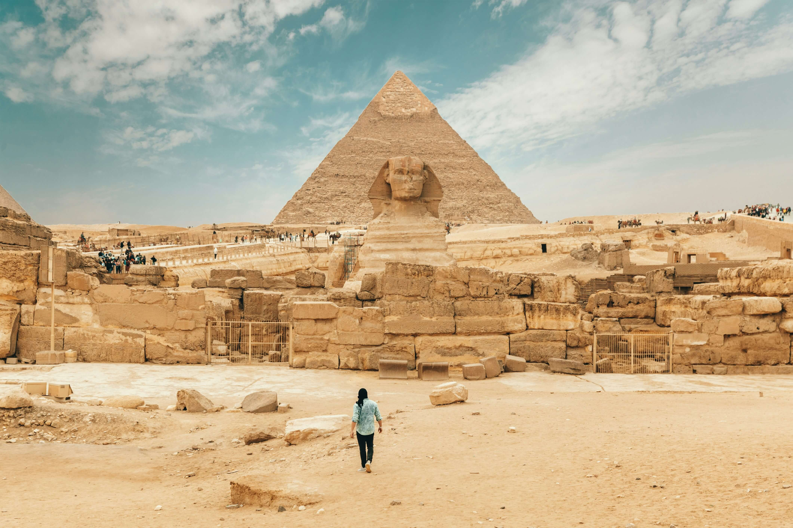
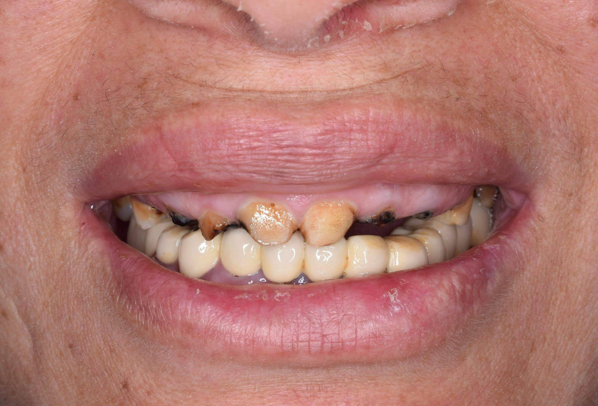
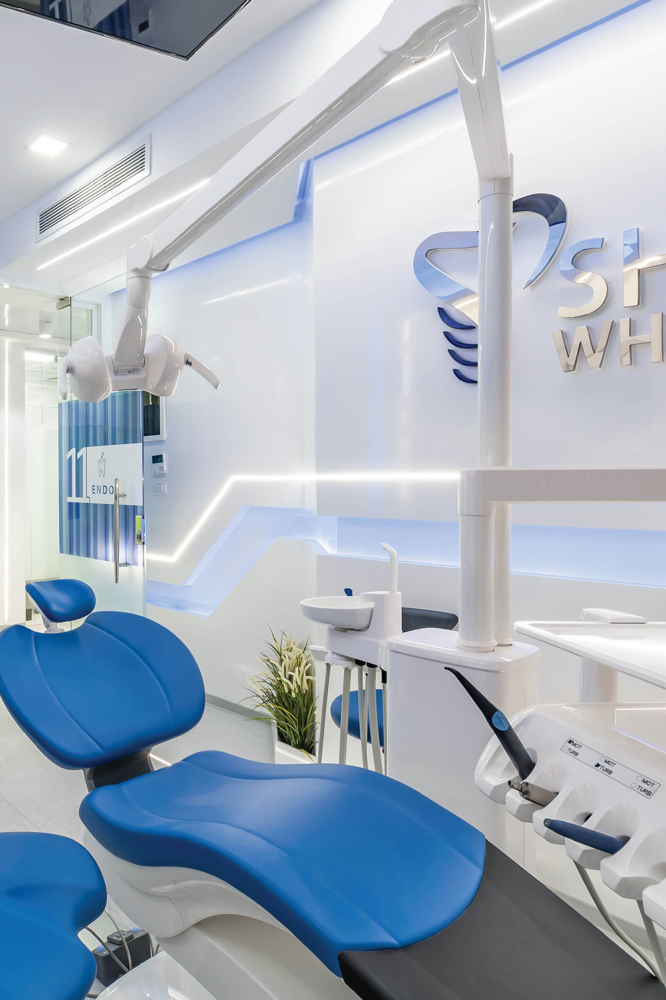
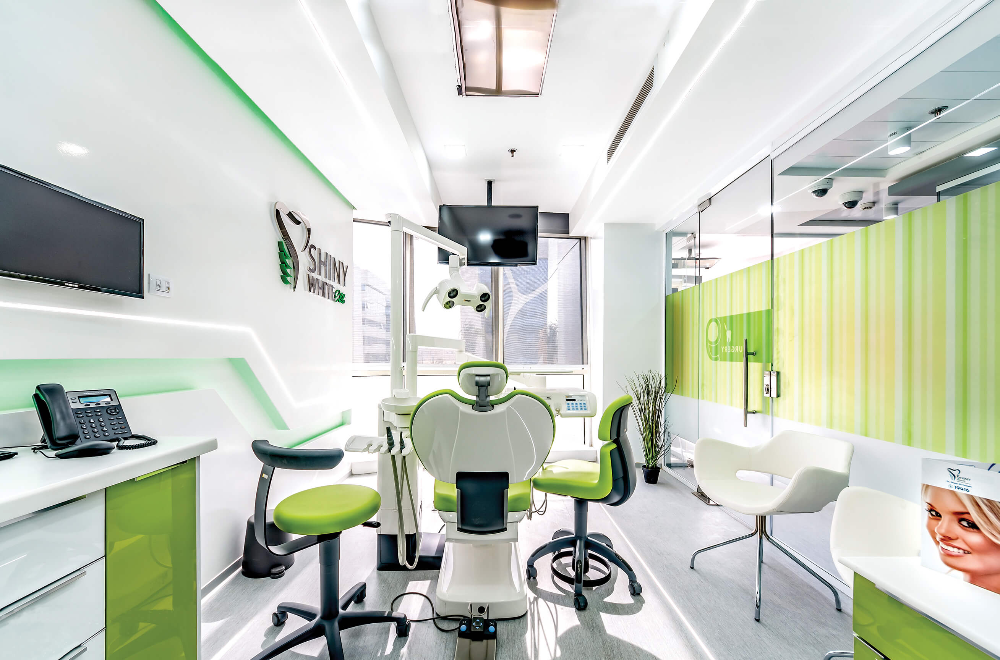
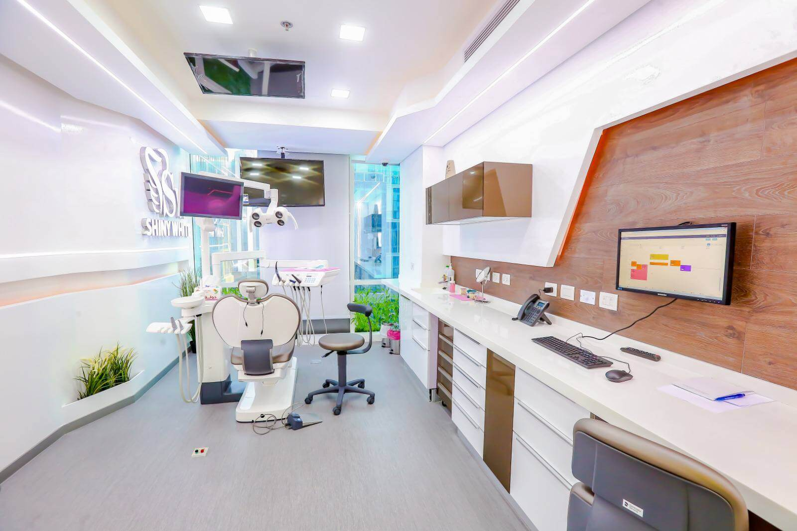
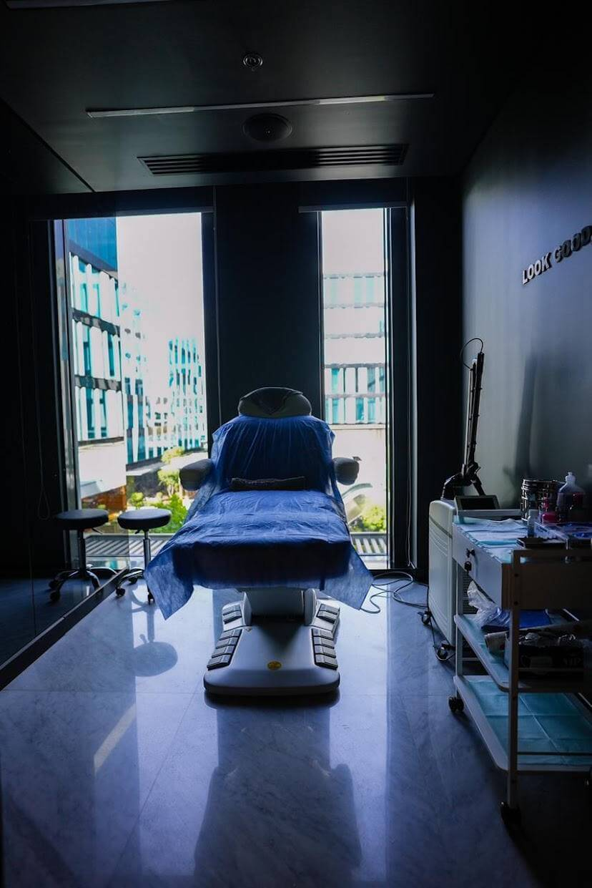
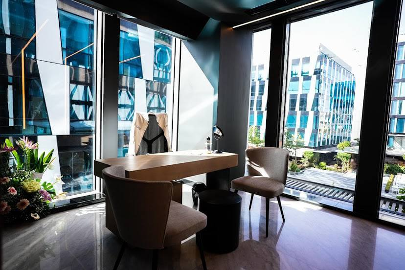

بإشراف كبار استشاريي طب وجراحة الأسنان • القاهرة، الشيخ زايد
زراعة الأسنان في القاهرة: الزرعة المفردة تبدأ من 2,250 ريال • والفك الكامل All-on-4 من 16,800 ريال 3 مستويات واضحة ومدروسة — الأساسية · المتقدمة الأوروبية · الملكية السويسرية
وش تنتظر؟ استرجع ابتسامتك وثقتك بدون ألم وبأعلى معايير الجودة العالمية. زرعات Straumann السويسرية · Nobel Biocare · Bego الألمانية. وفر أكثر من 65% مع ضمان ذهبي موثق مدى الحياة وجواز زراعة دولي رسمي.
تواصل فوري عبر واتساب • تسعير كتابي ثابت بدون أي رسوم خفية • على بعد ساعتين فقط من الرياض
الأسعار الحقيقية بكل شفافية وبدون لف ودوران
وش الفرق بين أسعار عيادات الخليج وأسعارنا في القاهرة؟
نفس الزرعات السويسرية الأصلية، نفس خامات الزيركونيا الألمانية، وبأيدي نخبة من استشاريي جراحة الفم والأسنان. الفرق الوحيد هو أنك توفر أكثر من 65% وبدون أي ألم!
متوسط التكلفة في عيادات ومستشفيات الرياض ودبي الكبرى
190,000 – 300,000 ريال
إعادة تأهيل وترميم الفكين بالكامل (الفك العلوي والسفلي) في المراكز الخاصة بالخليج
باقة الفكين الكاملة الشاملة مع نايل سمايل كونسيرج
43,000 ريال
السعر المعتاد: 60,000 ريال
عرض خاص لمرضى السعودية والخليج 2026. ترميم الفكين بالكامل — زرعات سويسرية/ألمانية، جسور زيركونيا، وخدمة كونسيرج فندقية متكاملة تريحك من أول يوم.
كم توفر في جيبك فعلياً؟
توفير من 144,000 إلى 257,000 ريال
مقارنة بنفس الإجراء بنفس الجودة في كبرى عيادات الرياض ودبي — مبلغ ضخم تحتفظ فيه لنفسك ولعائلتك!
نفس زرعات Straumann و Nobel Biocare السويسرية. نفس الضمان الذهبي الموثق مدى الحياة. راحة بال تامة من البداية للنهاية.
بينما يبيع الآخرون "عروضاً تجارية"،
نحن نلتزم ببروتوكول طبي صارم.
هناك آلاف العيادات حول العالم تقدم زراعة الأسنان. لكن لا توجد عيادة واحدة تلتزم بقواعد المستوى الأول الـ 12 الصارمة مثلنا. هذه ليست مجرد عبارة تسويقية — بل معيار طبي مكتوب وموثق يستلمه كل مريض وموقّع من الطبيب المعالج قبل بدء العلاج.
قواعد المستوى الأول الـ 12 — معايير غير قابلة للمساومة
تركيا — الخيار التجاري "منخفض السعر"
إعلان يغريك بـ 11,250 ريال .. ولما توصل تدفع 30,000 ريال .. وتحصل جودة ما تسوى 5,600 ريال!
- ✕زرعات مجهولة المصدر تحت مسمى "تيتانيوم سويسري"
- ✕ارتفاع السعر بنسبة 50–100% فور الوصول إلى العيادة
- ✕استعجال خطير لإنهاء العلاج في 3–5 أيام فقط
- ✕ضمان "مدى الحياة" شفهي فقط — لا قيمة قانونية له
- ✕غياب جواز الزراعة وغياب أرقام التشغيلة الرسمية
- ✕انقطاع المتابعة الطبية تماماً بمجرد عودتك إلى بلدك
عيادات ومستشفيات الرياض ودبي الخاصة — المعيار عالي التكلفة
190,000 إلى 300,000 ريال لنفس الزراعة ونفس الزرعات السويسرية!
- ✓أشهر الماركات السويسرية والألمانية المعتمدة عالمياً
- ✓ضمانات كتابية ورسمية موثقة
- ✓أشعة مقطعية ثلاثية الأبعاد CBCT وأدلة جراحية رقمية 3D
- ✓سجلات طبية كاملة وجواز زراعة رسمي
- ✓بيئة طبية ورقابة تنظيمية صارمة
- ✕تكلفة باهظة جداً تفوق ميزانية معظم المرضى
موقعنا ومبدأنا الطبي
نفس الماركات في أمريكا. ونفس المعايير والبروتوكول في أوروبا.
بسعر شفاف لا يمكن للعيادات التجارية منافسته بأمانة.
نرفض تماماً المنافسة على حساب السعر فقط — لأن التوفير غير المدروس يعني التنازل عن معايير التعقيم والجودة التي ستدفع ثمنها لاحقاً. بدلاً من ذلك، نلتزم بأعلى المعايير السريرية العالمية المعتمدة في أمريكا وأوروبا، ولكن بثلث التكلفة نظراً للموقع الجغرافي. الفارق ليس في الجودة، بل في تكاليف التشغيل.
أرقام وإحصائيات الثقة
+
سنوات خبرة إكلينيكية للفريق الطبي
مقعداً فقط لدفعة مرضى الخليج — 2026
.%
نسبة نجاح الزراعة الموثقة دولياً
/7
تواصل واستشارات مباشرة عبر واتساب
اعتماداتنا وتراخيصنا الرسمية
مراكزنا الشريكة معتمدة ومطابقة لأعلى المعايير العالمية
الاعتماد المصري للرعاية الصحية
إدارة الجودة العالمية
الجمعية المصرية لجراحة الأسنان
كلية الجراحين الملكية بإدنبرة
الفريق السويسري لزراعة الأسنان
مرضانا الكرام من كافة دول الخليج
ساعتان فقط تفصلك..
عن ابتسامتك الدائمة
نستقبل أسبوعياً ضيوفنا الكرام من السعودية، الإمارات، الكويت، قطر، البحرين، وعُمان — مع خدمة استقبال خاصة وسائق VIP من المطار وتنسيق طبي فندقي كامل 24/7.
استقبال VIP وسائق خاص من المطار مع دعم فوري ومباشر عبر واتساب 24/7 طوال فترة إقامتك.

د. عمر فتحي
طبيب أسنان ومؤسس نايل سمايل كونسيرج
بكالوريوس طب وجراحة الفم والأسنان
مسجل بنقابة أطباء الأسنان المصرية
تعرف على المؤسس
إشراف طبي واستشاري حقيقي..
وليس وساطة تجارية!
نايل سمايل كونسيرج أسسها د. عمر فتحي، طبيب أسنان مرخص وممارس إكلينيكي فاهم كل تفاصيل زراعة الأسنان، من قراءة الأشعة المقطعية ثلاثية الأبعاد CBCT وحتى تصميم وتثبيت الابتسامة النهائية بدقة متناهية.
بعكس مكاتب وشركات السياحة العلاجية التجارية اللي يديرها مسوقين، كل خطة علاجية وتكلفة تمر علينا تخضع لـ مراجعة طبية دقيقة من استشاري أسنان مختص قبل لا توصلك. نحرص على انتقاء أفضل الجراحين والاستشاريين في مصر، ونضمن لك عقداً وضماناً كتابياً يحميك ويوثق كل تفصيلة في علاجك.
- ✓طبيب أسنان مرخص وممارس يفهم احتياجك الطبي بدقة
- ✓ربط مباشر مع نخبة بروفيسورات واستشاريي زراعة الأسنان في مصر
- ✓دراسة مجانية شاملة لحالتك وأشعتك قبل أي التزام أو دفع
تُقدم المراجعة الطبية كخدمة تنظيمية وتنسيقية لضمان أعلى معايير الجودة. القرارات العلاجية والإجراءات الجراحية تقع تحت المسؤولية المهنية الحصرية للطبيب المعالج المرخص بالمركز الشريك المعتمد.
شبكتنا الطبية المعتمدة
نخبة من كبار استشاريي مصر..
مختارين بعناية لحالتك.
كل مريض نوصله بالاستشاري الأنسب والأكثر خبرة بنوع حالته وتفاصيل فكّه لضمان أعلى نسبة نجاح.
زمالات وتدريب دولي
شهادات دراسات عليا وزمالات إكلينيكية من كبرى الجامعات في أمريكا، بريطانيا، وألمانيا.
ماجستير ودكتوراه
مؤهلات تخصصية عليا في جراحة الوجه والفكين، زراعة الأسنان المتقدمة، والاستعاضة الصناعية.
خبرة سريرية رائدة
أكثر من 10 سنوات خبرة وسجل حافل بآلاف الحالات الناجحة في زراعة الفك الكامل All-on-4 و All-on-6.
أرقى المراكز المعتمدة
منشآت طبية حاصلة على اعتمادات GAHAR و ISO بالشيخ زايد مجهزة بأحدث الروبوتات والمسح الرقمي.
جميع الأطباء الاستشاريين مسجلون رسمياً بنقابة أطباء الأسنان ومصرح لهم بممارسة المهنة، ونزودك بكافة بيانات وسيرة الطبيب قبل تأكيد موعدك.
التخدير والراحة التامة
راحتك وعلاجك بدون ألم هي أولويتنا الأولى
خيارات تخدير وتهدئة متعددة، أنظمة زرعات سويسرية وألمانية رائدة، ومعايير أمان سريرية صارمة.
التخدير الموضعي المتطور
يقظ ومستريح تماماً
المعيار الأساسي لزراعة السن الواحد والإجراءات البسيطة. تكون بكامل وعيك وبدون أي إحساس بالألم نهائياً في المنطقة المعالجة.
المدة: ساعة إلى ساعتين لكل جلسة
التهدئة الفموية (Oral Sedation)
استرخاء وهدوء تام
للأشخاص اللي عندهم خوف أو توتر من عيادات الأسنان. مهدئ خفيف قبل الجلسة بـ 45 دقيقة يخليك مسترخي وبدون أي توتر أو قلق.
المدة: ساعة إلى 3 ساعات لكل جلسة
التهدئة الوريدية الواعية (IV Sedation)
نوم عميق وراحة مطلقة
بإشراف استشاري تخدير معتمد، مثالية لجراحات الفك الكامل All-on-4 و All-on-6. تنام بهدوء وتصحى وكل شيء منجز بدون أي انزعاج أو ذكريات مؤلمة.
المدة: ساعتان إلى 4 ساعات
أنظمة الزرعات المعتمدة
أنظمة الزرعات السويسرية والعالمية التي نعتمدها
جميع الزرعات معتمدة من هيئة الغذاء والدواء الأمريكية FDA وحاصلة على علامة CE الأوروبية، وتأتي من الوكلاء الرسميين فقط مع أرقام تشغيلة موثقة.
| نظام الزرعة | بلد المنشأ | نسبة النجاح (10 سنوات) | الاستخدام الأمثل | السعر يبدأ من |
|---|---|---|---|---|
| Straumann Roxolid | سويسرا | 99.2% | المناطق الجمالية، الحالات المعقدة، والذوبان العظمي | 4,500 ريال |
| Nobel Biocare | السويد / أمريكا | 98.8% | التحميل الفوري، وبراءات اختراع All-on-4 الأصلية | 4,125 ريال |
| Osstem TSIII | كوريا الجنوبية | 97.5% | الحالات القياسية، والخيار الاقتصادي المعتمد عالمياً | 2,250 ريال |
ملاحظة حول اختيار الزرعة: يعتمد اختيار النظام الأنسب لحالتك على معايير إكلينيكية دقيقة مثل كثافة العظام، موضع الزراعة، والمتطلبات الجمالية. يحدد الاستشاري المعالج التوصية المناسبة لك بعد مراجعة الأشعة المقطعية ثلاثية الأبعاد CBCT مجاناً.
أهلية العلاج
هل أنت مرشح مناسب لزراعة الأسنان؟
تقييم ذاتي سريع يوضح لك مدى ملاءمة حالتك لإجراء الزراعة الفورية بنجاح.
أنت مرشح ممتاز للزراعة إذا:
- ✓عمرك أكثر من 18 عاماً واكتمل نمو عظام الفك
- ✓اللثة سليمة وخالية من الالتهابات النشطة الحادة
- ✓لديك كثافة عظمية كافية — أو مستعد لتقبل التطعيم العظمي البسيط
- ✓غير مدخن أو قادر على تقليل التدخين خلال فترة الالتئام
- ✓قادر على السفر إلى القاهرة لمدة 7–10 أيام للعلاج والاستجمام
- ✓ملتزم بالعناية بنظافة الفم والأسنان بعد العملية
حالات تتطلب تقييماً وتنسيقاً طبياً مسبقاً:
- مرضى السكري (يجب أن يكون منتظماً ومعدل التراكمي أقل من 7.5%)
- تناول أدوية سيولة الدم (يتم التنسيق مع طبيبك المعالج)
- علاجات إشعاعية سابقة في منطقة الرأس والرقبة
- التدخين الشره (أكثر من 10 سجائر يومياً)
- صرير الأسنان الليلي الشديد (يتم تفصيل واقي ليلي مخصص)
تنبيه هام: يتم تأكيد الأهلية النهائية للعلاج فقط بعد دراسة الاستشاري المرخص لصور الأشعة المقطعية وتاريخك الصحي وفحصك السريري المباشر بالعيادة. هذا التقييم التقديري لا يُغني عن الفحص الطبي المباشر.
التميز السريري والمعايير الطبية
العلم والأبحاث خلف كل تفصيلة في ابتسامتك
كل خطوة وقرار في خطتك العلاجية مدعوم بأدلة سريرية ودراسات محكمة منشورة. اختر أي موضوع أدناه لتعرف كيف نضمن نجاح زراعتك بأعلى معايير الأمان.
أنظمة وزراعات الأسنان: مقارنة علمية موثقة بالأرقام
دراسة مستقبلية نُشرت عام 2026 في دورية Cureus قارنت النتائج الجمالية لكبرى أنظمة الزراعة في المنطقة الأمامية للفك العلوي.
أعلى درجة في مؤشر الجمال الوردي للثة (VAS 88.4). أفضل اندماج مع الأنسجة الحيوية — مع انخفاض خطر التهاب ما حول الزرعة بنسبة 33% بعد 9 سنوات.
نتائج جمالية استثنائية (VAS 85.6). سطح TiUnite المبتكر يحفز الاندماج العظمي فائق السرعة مع ثبات أسطوري طويل الأمد.
بديل اقتصادي متين ومعتمد (VAS 74.3). أساسيات قوية ومجربة سريرياً، مع نتائج جمالية أقل إحصائياً في المنطقة الأمامية مقارنة بالأنظمة السويسرية.
المصدر: دورية Cureus لعام 2026 — التقييم المقارن للنتائج الجمالية في زراعة الأسنان (90 مريضاً، متابعة 6 أشهر).
زراعة وترقيع العظام: بناء الأساس المتين للزرعة
كثافة وكتلة العظم السليمة هي الركيزة الأساسية لنجاح زراعة الأسنان واستمرارها مدى الحياة. تعتمد فرقنا الجراحية أحدث التقنيات القائمة على الأدلة السريرية.
إعادة بناء العظم الموجهة (GBR)
أغشية حيوية متطورة توجّه نمو العظم الجديد بكفاءة في مواضع الضمور. تمنح نتائج مؤكدة وقابلة للتنبؤ حتى في حالات العظم الرقيق والمعقد.
رفع الجيوب الأنفية (المباشر وغير المباشر)
تدعيم عظم الفك العلوي الخلفي لتمكين غرس الزرعات بأمان تام، مع توفر تقنيات متقدمة طفيفة التوغل عبر قمة الفك دون أي انزعاج.
الحفاظ على تجويف الضرس (Socket Preservation)
تطعيم عظمي فوري في موضع السن المخلوع يحافظ على 40–60% من أبعاد عظم الفك مقارنة بـ 20–30% فقط دون تطعيم وقائي.
المصدر: الدورية الدولية لطب دواعم السن وزراعة الأسنان 2025 — أحدث تقنيات زراعة وترقيع العظام.
طب الأسنان الرقمي: الدقة المتناهية بلا ألم
أشعة مقطعية ثلاثية الأبعاد CBCT
رؤية تفصيلية ثلاثية الأبعاد للعظام، الأعصاب والجيوب الأنفية بدقة متناهية تصل إلى 0.1 ملم لتجنب أي مفاجآت.
تصميم ونحت رقمي CAD/CAM
تصميم التركيبة رقمياً بالكمبيوتر ونحتها آلياً من كتل الزيركون الصلبة أو E-max لضمان تطابق ميكروني مثالي.
جراحة موجهة بالأدلة 3D
قوالب جراحية مطبوعة بتقنية 3D تضمن تثبيت كل زرعة في زاويتها وعمقها المخطط لهما تماماً وبلا جراحة عشوائية.
مسح رقمي داخلي فوري
بصمات رقمية فورية لشاشة الكمبيوتر — ودّع معجون الطبعات المزعج واستمتع بنماذج ثلاثية الأبعاد دقيقة وسريعة.
المسار الرقمي الكامل يقلل وقت الجراحة بنسبة تصل إلى 40% ويرفع دقة تثبيت الزرعات بمقدار 3 أضعاف (دورية زراعة الأسنان، 2024).
شركاء المواد والتصنيع: ماذا نستخدم ولماذا؟
نعمل حصرياً مع أنظمة الزرعات والمواد المعتمدة دولياً والمستوردة مباشرة من الشركات المصنعة العالمية أو وكلائها الرسميين المعتمدين.
شترومان (Straumann)
سويسرا
الرائد العالمي الأول في زراعة الأسنان، ومؤسس الفريق الدولي لزراعة الأسنان (ITI). يقدم أعلى نسب اندماج عظمي وأنظمة Bone Level و Tissue Level الرائدة.
نوبل بيوكير (Nobel Biocare)
السويد / أمريكا
المبتكر الأصلي لنظام برانيمارك وزراعة الفك الكامل All-on-4. سطح TiUnite المبتكر يوفر اندماجاً عظمياً فائق السرعة وثباتاً يدوم مدى الحياة.
الزيركون و E-max الألماني
ألمانيا / أمريكا
زيركون صلب متجانس (أكثر من 1,200 ميجاباسكال) للأضراس وقوى المضغ، وديسيليكات الليثيوم (E-max) للأسنان الأمامية وابتسامة هوليوود الطبيعية — كلاهما معتمد من FDA و CE.
تُستخدم جميع أنظمة الزرعات والمواد وفقاً لإرشادات الشركات المصنعة والبروتوكولات السريرية الدولية الصارمة.
المنظومة التقنية للعيادات: المعدات والاشتراطات القياسية
كل مركز شريك معنا مجهز بنفس فئة التجهيزات والتقنيات المعتمدة في أرقى مراكز الجراحة في أوروبا وأمريكا.
أشعة ثلاثية الأبعاد CBCT
Planmeca ProMax 3D, Carestream CS 9600, Sirona Orthophos SL
دقة تفوق 0.1 ملم
مخارط رقمية CAD/CAM
Sirona CEREC, 3Shape TRIOS, Roland DWX-52
تركيبات دقيقة في نفس الأسبوع
طباعة ثلاثية الأبعاد 3D
Formlabs Form 3B, Stratasys J5 DentaJet
أدلة جراحية رقمية مخصصة
مجاهر جراحية متطورة
Zeiss, Leica, Global
تكبير بصري جراحي حتى 25 ضعفاً
أنظمة الليزر التجميلي
Fotona, Biolase, Sirona
تنسيق وتجميل اللثة دون ألم
التعقيم الطبي المركزي
أجهزة أوتوكلاف Class B (Melag, W&H) مطابقة لمعايير ISO/CDC
توثيق واختبار لكل دورة تعقيم
شفافية مطلقة أمامك
أنظمة الزرعات التي نعتمدها — ولماذا تعتبر ماركة الزرعة فارقاً جوهرياً؟
ليست كل الزرعات متساوية. الماركة ليست مجرد اسم تجاري — بل هي مواصفة سريرية تحدد عمر الزرعة في فكك، وتوافق قطع غيارها عالمياً، وقوة ضمانها القانوني.
| المستوى | الماركة | المنشأ | المادة والسطح | نسبة البقاء بعد 10 سنوات | الضمان | الأنسب لـ |
|---|---|---|---|---|---|---|
| المميز (Premium) | Straumann | سويسرا | سبيكة Roxolid (تيتانيوم وزركونيوم) / سطح SLActive | 98.2% | مدى الحياة (جسم الزرعة) | الخيار الذهبي لأي حالة — أفضل اندماج مع الأنسجة واللثة، وأقل عرضة للالتهابات بنسبة 33% بعد 9 سنوات |
| المميز (Premium) | Nobel Biocare | السويد / أمريكا | تيتانيوم فئة 4 طبي نقي / سطح TiUnite | 98.8% (في تركيبات All-on-4) | مدى الحياة (جسم الزرعة) | الفك الكامل (All-on-4/6) — المبتكر الأصلي للتحميل الفوري، وثبات أسطوري طويل الأمد |
| المتوسط (Mid-Tier) | Osstem | كوريا الجنوبية | تيتانيوم فئة 4 طبي / سطح SA | 94.8% (بعد 10 سنوات) — 98.3% (بعد 5 سنوات) | 10–20 سنة (مشروط) | الحالات القياسية، خيار اقتصادي متين — أساسيات قوية، مع نتائج جمالية أقل في المنطقة الأمامية مقارنة بالسويسرية |
| غير معتمد / مجهول | زراعات تجارية بيضاء (Generic) | متفاوت (غالباً مصانع تجارية رخيصة) | غير موثق — توصف أحياناً بـ "تيتانيوم سويسري" أو "كوري ممتاز" دون ذكر الماركة صراحة | غير منشورة في المجلات العلمية | غالباً وهمي أو غير مكتوب | لا توجد بيانات سريرية منشورة. خطر عدم توافق قطع الغيار. إذا أغلقت العيادة، فلن تجد أي طبيب في الخليج يملك قطع غيار لها. |
المصادر: دراسات Chappuis وآخرون 2013 (Straumann 98.0%)؛ Buser وآخرون 2017 (Nobel حوالي 95%)؛ Chrcanovic 2018 / Howe 2019 (بيانات البقاء لعشر سنوات)؛ مجلة JOI (بيانات أوستيم لـ 5 سنوات).
وش يعني هذا لك؟ إذا أعطتك أي عيادة عرض سعر وقالت لك «شترومان» أو «نوبل» — اطلب كتابة اسم الماركة ونوع النظام صراحة في خطتك العلاجية. إذا قالوا «تيتانيوم سويسري» أو «كوري ممتاز» دون تحديد اسم النظام والشركة — فأنت تشتري وصفاً تسويقياً وليس ماركة موثقة. نحن نحدد لك اسم زرعتك ومواصفاتها كتابياً قبل أن تدفع ريالاً واحداً.
مجسم تفاعلي ثلاثي الأبعاد
حرك زرعة شترومان (Straumann) السويسرية — مباشرة من جهازك
اسحب بإصبعك أو الماوس للتدوير. مرر للتكبير. هذا هو التصميم الهندسي الدقيق الذي يخطط طبيبك لغرسه في فكك.
نموذج توضيحي هندسي — الخطة الفعلية لحالتك تعتمد على بيانات الأشعة المقطعية ثلاثية الأبعاد CBCT.
التكنولوجيا وراء دقة زراعتك
الأجهزة التي نعتمدها — ولماذا تحدد مصير ابتسامتك؟
خطأ مقداره 1 ملم فقط في وضع الزرعة قد يتسبب في إصابة عصب، أو تشوه في مظهر اللثة، أو فشل مبكر للزرعة. منظومتنا التقنية مصممة لإلغاء هذا الخطأ البشري تماماً قبل أن يبدأ الجراح أول خطوة.
أشعة مقطعية CBCT + ذكاء اصطناعي
يتعرف الذكاء الاصطناعي على كثافة العظم، والجيوب الأنفية، ومسار الأعصاب الحساسة بدقة تفوق 90% — مما يقلل وقت التخطيط ويلغي احتمالية الخطأ البشري. الجراح يدقق كل التفاصيل بنفسه، لكن التخطيط يبدأ من معيار أمان فائق.
أدلة جراحية مطبوعة 3D
قوالب جراحية دقيقة تُطبع بالليزر لتترجم الخطة الرقمية إلى فم المريض مباشرة. تضمن ثبات الزرعة في زاويتها وعمقها المخطط لهما دون الحاجة لتخمينات يد الجراح أو شق اللثة بشكل واسع.
الملاحة الجراحية الديناميكية
للحالات المعقدة وزراعة الأضراس الخلفية، توفر الملاحة توجيهاً ثلاثي الأبعاد على الشاشة لحظة بلحظة أثناء الجراحة بدقة فائقة لا تتيحها الجراحة اليدوية التقليدية، مما يضمن أعلى نسب الأمان.
موقفنا الصريح والواضح: «الجراحة بالروبوت» ليست سحراً. في حالات السن الواحد المباشرة، يكفي تماماً استخدام دليل جراحي ثابت عالي الدقة. الروبوتات تضيف قيمة استثنائية في الحالات المعقدة، والفك الكامل، وتجنب الأعصاب الحساسة. نحن نختار التكنولوجيا التي تفيد حالتك الطبية فعلاً — وليس لنستعرض بها تسويقياً.
الحقيقة المجردة بلا تجميل
وش هي "الزرعة الرخيصة" فعلياً؟ ولماذا ستدفع ثمنها أضعافاً مضاعفة؟
زرعة بـ 1,500 ريال ليست صفقة أو توفيراً، بل هي مخاطرة غير محسوبة: أنت تراهن على ألا تفشل — وإذا فشلت لا قدر الله، ستدفع تكلفة علاجها مجدداً في عيادات الخليج بأسعار مضاعفة.
رقم يستحق التوقف عنده: في عيادات الخليج الخاصة، تكلفة إزالة زرعة فاشلة ملتهبة، وترقيع عظم الفك المتآكل، وإعادة زراعة جديدة تتراوح بين 18,000 إلى 35,000 ريال من جيبك الخاص. وإذا كان الفشل في فك كامل All-on-4، فإن إعادة الترميم الشاملة تتكلف من 90,000 إلى 180,000 ريال!
المصدر: بيانات تسعير عيادات الأسنان الخاصة لعام 2026. "مساهمة الضمان التجاري" تغطي قطعة الغيار المعدنية فقط ولا تشمل أجور الجراحة والكرسي.
| ما تشتريه فعلياً | الزرعة التجارية الرخيصة | نايل سمايل — المستوى المميز |
|---|---|---|
| اسم الماركة في عرض السعر | غالباً يُكتب "تيتانيوم سويسري" أو "كوري ممتاز" — بلا اسم ولا بيانات | ✓ Straumann / Nobel Biocare — مكتوبة صراحة وموثقة في خطتك |
| بيانات البقاء والنجاح المنشورة | لا توجد دراسات محكمة طويلة المدى. علامة "CE/FDA" ليست دليلاً سريرياً على بقائها في فمك. | ✓ 40–70 سنة من الأبحاث المنشورة؛ نسبة البقاء بعد 10 سنوات 95–98% |
| جواز الزراعة الدولي (رقم التشغيلة) | نادراً ما يُسلّم — ولا يمكنك تفعيل أي مطالبة ضمان بدونه | ✓ يُسلم لكل مريض — متضمناً رقم التشغيلة، ورمز QR، والتسجيل المباشر لدى المصنع |
| ضمان العيادة المكتوب | مجرد كلام شفهي أو سطر تسويقي بموقع — ليس وثيقة رسمية موقعة | ✓ ضمان سريري 5 سنوات + ضمان مصنعي مدى الحياة — كلاهما كتابياً |
| ماذا يحدث إذا فشلت بعد سنتين أو ثلاث؟ | تدفع تكلفة إزالتها وترقيع العظم وزراعة جديدة بأسعار عيادات بلدك في الخليج | ✓ علاج سريري مغطى في مركزنا الشريك بالقاهرة (ضمن 5 سنوات وفق الشروط المكتوبة) |
| التكلفة الحقيقية الإجمالية للمريض | 1,500 – 3,500 ريال + 18,000 – 35,000 ريال عند الفشل = 19,500 – 38,500 ريال | 7,100 ريال — تدفعها مرة واحدة فقط، مع ضمان رسمي موثق |
"أرخص زرعة أسنان ليست هي ذات السعر الأقل في البداية.. بل هي الزرعة التي لن تضطر لاستبدالها طوال حياتك."
علم وهندسة المواد
سطح الزرعة الميكروسكوبي: هنا يُحسم نجاح الزرعة أو فشلها
قد تبدو أي زرعتين متطابقتين تماماً في صورة الأشعة العادية. لكن الفارق الحقيقي مجهري تحت الميكروسكوب — وهو الذي يحدد سرعة التحام عظمك بالزرعة، ومدى استمرارها معك.
السطح السويسري المميز
شترومان Straumann SLActive / Roxolid
- • سبيكة Roxolid: قوة شد تفوق التيتانيوم التقليدي بنسبة 20%، ومقاومة إجهاد أعلى بنسبة 21% في الزرعات الضيقة.
- • سطح SLActive الحيوي: تلامس بين العظم والزرعة بنسبة 50% خلال 4 أسابيع مقارنة بـ 30% للأسطح العادية.
- • النتيجة: التئام عظمي فائق السرعة، انخفاض مخاطر الفشل المبكر، وأداء استثنائي حتى مع عظام الفك الضعيفة.
المصدر: أبحاث شترومان ومعهد لانغ السريري لمقارنة سرعة الاندماج العظمي.
الأسطح التجارية غير الموثقة
"مكشوطة بالرمل وحمضية" — غير محددة
- • لا توجد مواصفات سبيكة منشورة. التيتانيوم التجاري فئة 4 هو حد أدنى وليس ضماناً لتحمل قوى المضغ الطويلة.
- • لا توجد بيانات تضاريس سطحية معتمدة. قد تختلف درجة الخشونة والميكرونات بين دفعة وأخرى.
- • لا توجد أبحاث مستقلة تثبت سرعة الاندماج العظمي أو الحفاظ على عظم الفك لعشرات السنين.
إذا عجزت الشركة عن تزويد طبيبك بشهادة السبيكة ومواصفات السطح — فأنت لا تشتري جهازاً طبياً موثوقاً، بل تشتري أملاً غير مضمون.
البروتوكول الطبي الذي تتجاهله أغلب العيادات
التهيئة الطبية الشاملة — تجهيز فمك وجسمك قبل غرس الزرعة
الأدلة الطبية لعام 2026 حاسمة: نجاح الزرعة يبدأ قبل الجراحة وليس أثناءها. التدخين، عدم انتظام السكر، التهابات اللثة غير المعالجة، والتصميم غير الدقيق هي عوامل يمكن ضبطها — والاهتمام بها هو الفارق بين المركز الطبي المحترف والعيادات التجارية السريعة.
المستوى 01 — الوقاية الأولية الشاملة
قبل الغرس: التخلص من عوامل الخطر
تنظيم السكر التراكمي (HbA1c أقل من 7%)، علاج كامل لالتهابات اللثة حتى استقرارها التام، وتوجيهات لنمط الحياة والتغذية. إذا كانت هناك عوامل خطر نشطة، تُؤجل الزراعة — ولا نتعجل أبداً على حساب سلامتك.
المستوى 02 — الرعاية الداعمة بعد الزراعة
بعد الغرس: بروتوكول الصيانة الدورية (SPIC)
متابعة منظمة كل 3–6 أشهر للحالات المعرضة للمخاطر، وسنوياً للحالات العادية. تشمل فحص عمق الجيوب، ومستوى اللثة، وإزالة البلاك بجهاز مخصص دون خدش الزرعة لضمان سلامتها مدى الحياة.
المستوى 03 — الاكتشاف المبكر والعلاج التحفظي
معالجة التهاب الأنسجة فوراً قبل وصوله للعظم
استخدام مساحيق الجلايسين والإريثريتول الهوائية لتنظيف أسطح الزرعات بلطف ودون أي تلف لمعدن الزرعة، وتدارك أي التهاب في مهده دون جراحة مؤلمة.
المستوى 04 — التدخل المتقدم لحماية الزرعة
إنقاذ الزرعة في حال حدوث التهاب عميق
بروتوكولات جراحية دقيقة لإعادة بناء العظم، مع خطة صيانة ممتدة تمنع تكرار المشكلة وتضمن استعادة الوظيفة الكاملة للسن واستقراره الدائم.
الرقم الذي يُحدث الفارق: مع برامج المتابعة والصيانة المنظمة، لا تتجاوز نسبة التهاب الزرعات 18%. أما لدى المرضى الذين يهملون المتابعة، ترتفع النسبة إلى 43.9%! الفارق ليس في ماركة الزرعة وحدها — بل في الالتزام بالبروتوكول الطبي السليم.
المصدر: دراسة متعددة المراكز، أكثر من 3,500 زرعة (دورية Dental Economics 2026؛ إرشادات EFP S3 الأوروبية).
الحسبة الحقيقية بالأرقام
التكلفة الحقيقية للزرعة الرخيصة
الزرعة الرخيصة ليست رخيصة أبداً. أنت تدفع قيمتها مرتين — مرة يوم تركيبها، ومرة ثانية مضاعفة عندما تفشل وتضطر لعلاجها في عيادات بلدك بالخليج.
الخيار "المغري ظاهرياً"
زرعة تجارية مجهولة بالخارج بسعر 1,900 – 3,400 ريال. بدون ماركة محددة. بدون أبحاث منشورة. وبدون ضمان رسمي مكتوب.
الخيار الطبي الموثوق (نايل سمايل)
زرعة سويسرية/أوروبية معروفة (Straumann / Nobel / Osstem). ضمان مكتوب. جواز زراعة برقم التشغيلة. بيانات بقاء منشورة 98%.
"أرخص زرعة أسنان هي الزرعة التي لن تضطر لتغييرها طوال حياتك."
حقيقة الضمان بلا تجميل
«الضمان مدى الحياة» — ماذا يشمل فعلياً على أرض الواقع؟
كل عيادة تروّج لـ «ضمان مدى الحياة»، لكن قليل جداً من يوضح لك أن هناك وثيقتين منفصلتين تماماً — وواحدة منهما فقط هي التي ترافقك وتسافر معك إلى بلدك.
ضمان الشركة المصنّعة
صادر مباشرة من شركات مثل شترومان (Straumann) أو نوبل بيوكير (Nobel Biocare). يغطي جسم الزرعة التيتانيوم (المسمار المزروع في العظم) — كقطعة غيار بديلة فقط.
- • المستفيد المعتمد: طبيب الأسنان المعالج — وليس المريض بصفة مباشرة.
- • قابل للتطبيق دولياً: نعم — عبر الوكيل المحلي في بلدك، بشرط توفر رقم التشغيلة (Lot Number).
- • لا يشمل: أجور كرسي العيادة، وتكاليف المعمل، ورسوم الجراحة اليدوية.
لهذا السبب نسلّمك جواز الزراعة الدولي — ليتمكن طبيبك في الخليج من تفعيل المطالبة الرسمية فوراً.
ضمان العيادة على الإجراء السريري
صادر من المركز الطبي المعالج في القاهرة. يغطي العمل الجراحي والسريري — من إزالة الزرعة، وإعادة الزراعة، وجلسات المتابعة.
- • المستفيد: المريض نفسه.
- • قابل للتطبيق دولياً: لا — يسري ويُطبّق حصراً لدى مركزنا الشريك في القاهرة.
- • الشروط: إجراء الفحص الدوري السنوي والالتزام بإرشادات نظافة الفم.
ضماننا السريري مدته 5 سنوات — مكتوب، وموقّع رسمياً، ومُلزم لمركزنا المعتمد في القاهرة.
الوثيقة التي تجعل الضمان حقيقة نافذة
جواز الزراعة الدولي (Implant Passport)
من دون هذا الجواز الرسمي، يُصبح ضمان الشركة المصنّعة غير قابل للتنفيذ قانونياً في بلدك. تشترط جميع الشركات العالمية الكبرى (شترومان، نوبل بيوكير، دنتسبلاي، نيودنت) وجود رقم القطعة ورقم التشغيلة (Lot Number) لقبول أي مطالبة بالاستبدال — وهذه الأرقام تؤخذ مباشرة من الملصق الأصلي على غلاف الزرعة وتُلصق في جوازك فور إجراء الجراحة.
اسأل أي عيادة دائماً: «هل ستسلمونني الملصق الأصلي للشركة المصنعة متضمناً رقم التشغيلة على جواز زراعة رسمي قبل مغادرتي؟» إذا لم تكن إجابتهم نعم فورية ومؤكدة — فإن «الضمان مدى الحياة» الموعود لا وجود له عملياً على أرض الواقع.
"الضمان مدى الحياة من دون رقم تشغيلة هو مجرد شعار تسويقي.. أما برقم التشغيلة الرسمي، فهو حق قانوني نافذ."
— نايل سمايل كونسيرج (Nile Smile Concierge)
الأطباء خلف ابتسامتك
كفاءات وخبرات يمكنك التحقق منها — وليست صوراً تسويقية جاهزة
كل طبيب في شبكتنا مرخص، ومعتمد، وموثق رسمياً. نحن لا نتعاقد مع "منسقي ابتسامة" تجاريين — بل نعمل حصرياً مع استشاريين وجراحين نخبويين.
نقابة أطباء الأسنان المصرية
ترخيص مزاولة مهنة سارٍ ونشط لجميع الأطباء المعالجين — يتم التحقق منه رسمياً قبل إحالة أي حالة.
درجات الماجستير والدكتوراه (MSc / PhD)
مؤهلات عليا في زراعة الأسنان، والاستعاضة الصناعية، وجراحة الوجه والفكين من جامعات القاهرة والإسكندرية وعين شمس وزمالات بريطانية وأمريكية.
أكثر من 10 سنوات خبرة جراحية
سجل حافل من الحالات الناجحة والموثقة. ليست "سنوات منذ التخرج"، بل سنوات من الممارسة الجراحية المباشرة في زراعة الأسنان.
اعتمادات GAHAR و ISO للمراكز
المرافق والعيادات الشريكة معتمدة رسمياً — وليست مجرد ديكورات فاخرة. تخضع بروتوكولات التعقيم، والتصوير الإشعاعي، والطوارئ لرقابة مستمرة.
تتم مشاركة السيرة المهنية الكاملة للأطباء — بما فيها أرقام التراخيص والانتماءات الأكاديمية — معك كتابياً قبل تأكيد أي حجز.
لا تأخذ كلامنا على عواهنه.. تحقق بنفسك
تحقق من كل وثيقة واعتماد — قبل أن تدفع ريالاً واحداً
نحن ننشر بشفافية ما تخفيه معظم العيادات: أرقام تراخيص الأطباء، شهادات اعتماد المراكز، إمكانية تتبع رقم تشغيلة الزرعة، وبنود الضمان الرسمية. إذا عجزت أي عيادة عن إطلاعك على هذه المستندات، فهي ليست مركزاً طبياً — بل مجرد مكتب مبيعات.
أرقام تراخيص الأطباء
قيد نقابة أطباء الأسنان المصرية — قابلة للتحقق الفوري والرسمي، وليس مجرد "ثق بنا".
شهادات الاعتماد الرسمية
شهادات GAHAR / ISO / JCI أو Temos — نسخ ممسوحة ضوئياً ورسمية، وليست مجرد شعارات صورية.
نموذج جواز الزراعة الدولي
يتضمن الماركة، ورقم التشغيلة، ورمز QR، وشروط الضمان — الوثيقة التي تجعل الضمان حقيقة نافذة في الخليج.
شروط الضمان المكتوبة
ضمان الشركة المصنعة + ضمان العيادة السريري — كلاهما مكتوب بلغة واضحة لا تحتمل اللبس.
تتم مشاركة جميع الوثائق والشهادات معك بعد مراجعة حالتك مجاناً — وقبل دفع أي مبالغ أو عربون.
علم وهندسة المواد
مواد ترقيع وزراعة العظام: ماذا نستخدم ولماذا؟
كل مادة ترقيع عظمي لها مزايا سريرية محددة. إليك كيف نختار المادة الأنسب بدقة لحالتك لضمان ثبات الزرعة مدى الحياة.
| نوع المادة | المصدر | الميزة السريرية | اعتبارات الاستخدام |
|---|---|---|---|
| الطعم الذاتي (Autograft) | عظم من المريض نفسه | المعيار الذهبي — محفز ومكوّن للعظام طبيعياً | يتطلب موضع جراحي ثانوي |
| الطعم البشري (Allograft) | بنوك أنسجة بشرية متبرع بها ومعقمة | موصل عظمي ممتاز، يجنب المريض جراحة إضافية | يخضع لفحوصات تعقيم وتطهير فائقة الدقة |
| الطعم الحيواني المعالج (Xenograft) | عظم بقري منزوع البروتين ومعالج | ممتاز في الحفاظ على الحجم، ويستخدم بكثرة في رفع الجيوب الأنفية | امتصاص عظمي متوازن وبطيء |
| الطعم الصناعي (Alloplast) | مواد تركيبية آمنة (β-TCP, HA) | متوفر بكميات غير محدودة وخالٍ من أي مخاطر حيوية | يفتقر لعوامل النمو الحيوية الذاتية |
المصدر: الدورية الطبية الأوروبية PMC 2026 — ترقيع العظام في طب الأسنان الحديث.
المواد التعويضية والتجميلية
مواد التيجان والتركيبات الكاملة: ما تثبته الأبحاث العلمية
عندما تبتسم أو تمضغ الطعام، فإن مادة التاج تصنع الفارق كله. إليك مقارنة دقيقة بين الخيارات الثلاثة الأكثر استخداماً.
| المادة | الصلابة والمتانة | الجمال والشفافية | الأنسب لـ | التقييم والاعتماد |
|---|---|---|---|---|
| الزيركون الصلب المتجانس (Monolithic Zirconia) | أكثر من 1,200 ميجاباسكال | طبيعي وجيد جداً | الأضراس الخلفية وقوى المضغ، وجسور الفك الكامل | خيارنا القياسي المعتمد للأضراس |
| ديسيليكات الليثيوم (E-max) | 500 ميجاباسكال | قمة في الجمال والشفافية | الأسنان الأمامية ومنطقة الابتسامة | خيارنا القياسي المعتمد للأسنان الأمامية |
| الخزف المندمج بالمعدن (PFM) | عالية (قلب معدني) | مقبولة | خيار اقتصادي قديم | متوفر عند الطلب (لا ننصح به تجميلياً) |
المصادر: دورية الاستعاضة السنية 2024؛ الدورية الدولية لتركيبات الأسنان 2025. نعتمد حصرياً الزيركون و E-max لضمان أعلى متانة وجمالية.
تقويم وتجميل الأسنان
التقويم الشفاف الذكي مقابل التقويم السلكي التقليدي
التقويم الشفاف (قوالب غير مرئية)
- ✓رضا أعلى بكثير للمرضى: 85% مقارنة بـ 70% للتقليدي
- ✓مدة علاج أقصر: 20.8 شهراً مقابل 27.5 شهراً في المتوسط
- ✓صحة أفضل بكثير للثة والأسنان وسهولة تامة في التنظيف اليومي
- ✓راحة تامة وبدون آلام أو جروح الأسلاك المعدنية المزعجة
التقويم السلكي التقليدي
- ✓تحكم فائق في دوران الأسنان وزوايا الجذور الصعبة
- ✓سيطرة أفضل على الحركات العمودية في الحالات المعقدة
- ✓أكثر فاعلية في حالات سوء الإطباق الشديد وتراكب الفكين
- ✓لا يعتمد على التزام المريض بارتداء القوالب يومياً
منهجيتنا الطبية: نوصي بالأداة الطبية الأنسب لحالتك وابتسامتك — وليس بالخيار الأكثر ربحاً لنا.
المصدر: دورية Medicine (Baltimore) لعام 2026؛ ومجلة Nature التحليلية 2026.
رحلة ميسرة بلا أي عناء
إجراءات السفر واللوجستيات — متكفلون بها بالكامل
من لحظة هبوط طائرتك في مطار القاهرة، يتولى فريق الكونسيرج إدارة كافة التفاصيل اللوجستية بدقة متناهية.
تفرغ لراحتك وتعافيك — ونحن نتكفل بكل ما تبقى.
تنسيق حجوزات الطيران
أفضل مسارات ورحلات الطيران المباشرة من مدن الخليج (الرياض، جدة، دبي، أبوظبي، الكويت، الدوحة، المنامة، مسقط) المتزامنة بدقة مع مواعيد خطتك العلاجية.
تسهيل التأشيرات والدخول
تسهيلات الدخول الفوري لمواطني الخليج وتقديم خطابات الدعوة الرسمية وتأكيدات المواعيد الطبية وحجوزات الفنادق.
العملات وطرق الدفع
إرشادات شاملة حول الدفع بالريال السعودي، الدرهم، الدينار، أو الدولار، وقبول البطاقات الائتمانية والتحويلات المعتمدة في المراكز والفنادق.
شريحة اتصال وإنترنت محلي
شريحة اتصال وإنترنت مجانية فور وصولك لتظل على اتصال دائم بعائلتك وعملك طوال فترة إقامتك.
نظام غذائي صحي وملائم
إرشادات غذائية مخصصة لمرحلة ما بعد الجراحة، مع التنسيق مع شيف الفندق لتوفير وجبات لينة وصحية تضمن راحتك.
الطقس وحقيبة السفر
معلومات تفصيلية عن درجات الحرارة وقائمة تجهيز مخصصة لحقيبة سفرك تناسب توقيت زيارتك للقاهرة.
ما يُرجى إحضاره معك في رحلتك
جواز السفر (سارٍ لأكثر من 6 أشهر) + إثبات الحجز
الأشعة البانورامية أو المقطعية الحديثة (نسخة رقمية)
قائمة الأدوية المعتادة والمزمنة التي تتناولها
تقرير السجل الطبي من طبيبك في الخليج (إن وُجد)
وثيقة تأمين السفر الطبي (موصى بها)
ملابس مريحة وياقات واسعة لراحة أكبر بعد العملية
هاتف ذكي أو جهاز لوحي لجلسات المتابعة المرئية
محول كهربائي (مصر تستخدم المقابس من النوع C/F بجهد 220 فولت)
المكانة الأكاديمية الرفيعة
أطباء متخرجون من أعرق كليات طب الأسنان المصنفة عالمياً
استشاريونا وأطباؤنا الشركاء تخرجوا وتدربوا في أرقى كليات طب الأسنان في مصر — مؤسسات عريقة تصنف ضمن الأفضل على مستوى العالم ولها تاريخ يمتد لعقود.
جامعة القاهرة
ضمن أفضل 101–150 عالمياً — تصنيف شنغهاي 2025
كلية طب الأسنان مصنفة بين أفضل 150 كلية عالمياً. برنامج زمالة دولي لتقويم وزراعة الأسنان بالشراكة مع كلية الجراحين الملكية في إدنبرة.
جامعة الإسكندرية
الرقم 1 في أفريقيا والوطن العربي
أعلى كلية طب أسنان تصنيفاً في أفريقيا والمنطقة العربية. درجات دراسات عليا متقدمة ومعتمدة من الكلية الملكية للجراحين في إدنبرة.
جامعة عين شمس
ضمن أفضل 151–200 عالمياً
مصنفة 151–200 في علوم طب الفم والأسنان. حاصلة على الاعتماد الدولي الألماني AQAS وبرامج تعليم مستمر معتمدة من الجمعية الأمريكية لطب الأسنان (ADA).
الوجهة المثالية
لماذا مصر هي وجهتك الأولى لزراعة وتجميل الأسنان؟
مصر ليست مجرد وجهة سياحية — بل هي تاريخ ممتد لأكثر من 7,000 عام في العلوم الطبية، مجتمعاً مع بنية تحتية طبية عالمية، وأطباء من النخبة، وقرب جغرافي استثنائي من الخليج.
قرب المسافة والراحة
رحلة طيران مباشرة من الرياض أو جدة أو دبي تستغرق ساعتين إلى 3 ساعات فقط، بدون عناء الرحلات الطويلة أو فوارق التوقيت المرهقة.
جامعات مصنفة عالمياً
كلية طب الأسنان بجامعة القاهرة مصنفة ضمن أفضل 101–150 عالمياً (شنغهاي 2025). وجامعة الإسكندرية الأولى عربياً وأفريقياً.
معايير ومواد عالمية
مراكز حاصلة على اعتمادات GAHAR و ISO، وتعتمد أرقى المواد والزرعات السويسرية والألمانية المعتمدة من FDA و CE.
أمان وضيافة لأهل الخليج
وجهة آمنة ومريحة، دخول ميسر وسريع، طقس معتدل، وأجواء عربية أصيلة تشعرك أنك في بلدك وبين أهلك.
الاستشفاء الشتوي: ميزة البحر الأحمر ونقاء الأجواء
مياه دافئة 22–26°C
يحافظ البحر الأحمر على مياه دافئة على مدار العام، ويوفر الشتاء أفضل رؤية ونقاء هواء لدعم تعافيك.
منتجعات واستجمام عالمي
شرم الشيخ، الغردقة، والجونة تقدم بيئة ساحلية ساحرة ونقاهة راقية بعد إتمام الجلسات العلاجية.
معالم القاهرة والأهرامات
استمتع برحلة نيلية خاصة وزيارة المتحف الكبير وأهرامات الجيزة على بُعد دقائق من فندقك.
القيمة الحقيقية التي تدفع مقابلها
وش اللي يخلي خدمات نايل سمايل مختلفة تماماً؟
نحن لا نقبل التهاون في الجودة. إليك بالتفصيل ما يشمله استثمارك في باقاتنا المتكاملة — ولماذا نضمن لك تجربة علاجية أكثر أماناً وتوثيقاً من البداية وحتى التعافي.
إشراف سريري كامل بواسطة طبيب استشاري
كل خطة علاجية يراجعها ويدرسها استشاري مرخص بنفسه قبل أن تصلك. لسنا وكالة وساطة تجارية — بل خدمة طبية كونسيرج متكاملة.
ماركات ومواد أصلية معتمدة
نعمل حصرياً مع شترومان (Straumann)، ونوبل بيوكير (Nobel Biocare)، والمواد المعتمدة من FDA الأمريكية. لا نستخدم زرعات تجارية رخيصة أو مواد بديلة أبداً.
ضمان رسمي موثق ومتابعة سريرية
ضمانك الثنائي وجلسات المتابعة المجدولة عن بعد مشمولة في خطتك — وليست رسوماً إضافية. هذا المستوى من الالتزام نادر في العيادات العادية.
تنسيق كونسيرج شامل لكافة تفاصيل رحلتك
من الاستقبال الخاص في المطار والتنقلات وحتى توفير الأدوية وتنسيق الإقامة الفاخرة. تفرغ أنت لراحتك ونحن نتكفل بالباقي.
فريق رعاية واستقبال عربي
فريقك الطبي ومنسقك الخاص يتحدث معك بلغتك ولهجتك بكل وضوح وتفهم، لتشعر بالراحة التامة وبلا أي حواجز تواصل.
حماية قانونية وتغطية المسؤولية الطبية
مراكزنا الشريكة تلتزم بالتأمين الإلزامي على المسؤولية الطبية وفقاً لقانون المسؤولية الطبية المصري رقم 13 لسنة 2025 — حمايتك القانونية مضمونة.
خلاصة الأمر: أنت لا تدفع تكلفة إضافية على نفس الخدمة العادية، بل تدفع مقابل إشراف طبي صارم، ومواد سويسرية أصلية، وضمانات مكتوبة، ومستوى متابعة لا توفره العيادات الفردية التجارية. إذا كنت تبحث عن أرخص سعر مجرد دون ضمانات، فهناك خيارات تجارية كثيرة بالخارج. أما إذا كنت تبحث عن العلاج الأكثر أماناً وتوثيقاً وراحة بال مع ضمان يدوم — فأنت في المكان الصحيح.
أسعار شفافة ومحددة — دون أي رسوم خفية
باقات العلاج وزراعة الأسنان
تسعير العلاج الطبي فقط. تتوفر خيارات الفنادق والتنقلات وخدمات الكونسيرج كإضافات اختيارية منفصلة — لتكون على دراية تامة بما تدفعه مقابل العلاج الطبي، وما تخصصه لراحتك وإقامتك.
اختر المستوى المناسب لك — 3 خيارات للماركات، 3 مستويات للأسعار، و3 معايير للخدمة
الأساسي (Essential)
زرعات كورية معتمدة
Osstem / Dentium — سعر اقتصادي مع الالتزام الكامل بالبروتوكول الطبي
المميز (Premium)
زرعات أوروبية
Bego / Camlog / Anthogyr — صناعة ألمانية وفرنسية معتمدة
سيجنتشر (Signature)
زرعات سويسرية وأمريكية رائدة
Straumann / Nobel Biocare / Zimmer — القمة العالمية في زراعة الأسنان
ما الفرق بين هذه المستويات؟ الفارق لا يقتصر على ماركة الزرعة فقط، بل يشمل أكثر من 15 معياراً علاجياً: نوع التصوير والأشعة (بانوراما مقابل CBCT ثلاثي الأبعاد ومسح رقمي)، الأدلة الجراحية، نوع التخدير (موضعي، مهدئ، أو وريدي IV)، مادة التيجان، التركيبات المؤقتة، شمولية ترقيع العظام، مدة الضمان، الواقي الليلي، وتبييض الأسنان وغيرها. يمكنك الاطلاع على جدول المقارنة الشامل أدناه.
تنويه هام — يُرجى القراءة: جميع الأسعار المعروضة هي تقديرات استرشادية بالريال السعودي (SAR) للحالات النمطية (بحساب سعر الصرف الثابت 1 دولار = 3.75 ريال). يتم تحديد السعر النهائي بدقة بناءً على دراسة صور الأشعة المقطعية ثلاثية الأبعاد CBCT وكثافة عظمك وتاريخك الصحي، ويتم تأكيد السعر كتابياً بشكل نهائي قبل سفرك دون أي مليم إضافي خفي.
أسعار الفنادق الموسمية: تختلف أسعار الفنادق حسب مواسم السفر. موسم الذروة (نوفمبر – مارس): زيادة 30–50%. الموسم المنخفض (مايو – سبتمبر): أسعار مخفضة. يتم تأكيد عروض أسعار الإقامة الفندقية بدقة بعد مراجعة حالتك واختيار مواعيدك.
الإجراءات التكميلية (في حال دعت الحاجة الطبية): إجراءات مثل ترقيع العظام، ورفع الجيوب الأنفية (Sinus Lift)، والخلع الجراحي الإضافي غير مشمولة في الباقات القياسية — حيث يعتمد تحديدها على نتائج الأشعة المقطعية CBCT. وفي حال تطلبت حالتك أياً منها، يتم تسعيرها وتوضيحها كتابياً بشكل مسبق بعد الدراسة السريرية المجانية. النطاق التقديري المعتاد: 2,250 إلى 9,400 ريال للموضع الواحد.
الجدول الزمني والزيارات
كم زيارة علاجية تحتاج إلى القاهرة؟
بعض العلاجات تُنجز بالكامل خلال زيارة واحدة قصيرة. بينما تتطلب زراعة الأسنان الكاملة فترة التئام عظمي (Osseointegration) تقضيها براحة في منزلك قبل تركيب الأسنان الدائمة — أي رحلتين قصيرتين ومريحتين بدلاً من إقامة واحدة طويلة ومكلفة.
| الباقة العلاجية | عدد الزيارات | الزيارة الأولى | فترة الالتئام (في بلدك) | الزيارة الثانية | المدة الإجمالية |
|---|---|---|---|---|---|
| المستوى الأساسي (Essential) | |||||
| زرعة مفردة — المستوى الأساسي | 1 | 5–7 أيام | — | — | 5–7 أيام |
| طقم مثبت على زرعات — الأساسي | 1–2 | 7–8 أيام | 3–4 أشهر | 4–5 أيام | 3–4 أشهر |
| زراعة الفك الكامل All-on-4 — الأساسي | 2 | 7–8 أيام | 3–6 أشهر | 5–7 أيام | 5–7 أشهر |
| زراعة الفك الكامل All-on-6 — الأساسي | 2 | 7–10 أيام | 3–6 أشهر | 5–7 أيام | 5–7 أشهر |
| المستوى المميز (Premium) | |||||
| تيجان الزيركون الكاملة — المستوى المميز | 1 | 7–8 أيام | — | — | 7–8 أيام |
| زرعة مفردة — المستوى المميز | 1 | 5–7 أيام | — | — | 5–7 أيام |
| طقم مثبت على زرعات — المستوى المميز | 1–2 | 7–8 أيام | 3–4 أشهر | 4–5 أيام | 3–4 أشهر |
| ترميم فك كامل — المستوى المميز | 2 | 7–8 أيام | 3–6 أشهر | 5–7 أيام | 5–7 أشهر |
| زراعة الفك الكامل All-on-6 — المميز | 2 | 7–10 أيام | 3–6 أشهر | 5–7 أيام | 5–7 أشهر |
| إعادة تأهيل الفكين بالكامل — المميز | 2 | 7–10 أيام | 3–6 أشهر | 5–7 أيام | 5–7 أشهر |
| إنقاذ وتصحيح الزرعات الفاشلة — المميز | 2–3 | 7–14 يوماً | 4–6 أشهر | 5–7 أيام | 6–9 أشهر |
| التقويم الشفاف — المستوى المميز | 2 | 3–5 أيام | 6–12 شهراً | 3–5 أيام | 6–12 شهراً |
| مستوى سيجنتشر (Signature / Top Tier) | |||||
| زراعة الفك All-on-4 — سيجنتشر | 2 | 7–8 أيام | 3–6 أشهر | 5–7 أيام | 5–7 أشهر |
| زراعة الفك All-on-6 — سيجنتشر | 2 | 7–10 أيام | 3–6 أشهر | 5–7 أيام | 5–7 أشهر |
| زرعات وجنية ووجنية خلفية (Zygomatic / Pterygoid) | 2–3 | 7–14 يوماً | 4–6 أشهر | 5–7 أيام | 6–9 أشهر |
ملاحظة هامة: تقضي "فترة الالتئام" براحة تامة في بيتك وبلدك — وليس في مصر. خلال هذه الشهور يحدث الالتحام العظمي الطبيعي بين الزرعات وفكك. تمارس حياتك وعملك بصورة طبيعية مع متابعتنا الطبية المستمرة عن بُعد، وتعود في الزيارة الثانية لتركيب الأسنان النهائية الدائمة.
الأساسي
المستوى الأساسي — الخيار الاقتصادي الذكي
زرعات Osstem كورية · أشعة بانوراما · تخدير موضعي · ضمان كتابي 5 سنوات · التزام بالبروتوكول الكامل
عرض الباقات
المستوى الأساسي — الخيار الاقتصادي الذكي
زرعات Osstem كورية · أشعة بانوراما · تخدير موضعي · ضمان كتابي 5 سنوات · التزام بالبروتوكول الكامل
الأساسي 01
زرعة مفردة — المستوى الأساسي
تعويض سن مفقود واحد بجودة مضمونة. بدون تكاليف إضافية غير ضرورية، ودون أي تهاون في معايير السلامة.
السعر التأسيسي — دفعة 2026
2,250 ريال
السعر المعتاد: 3,370 ريال — وفر 1,120 ريال
ما تشمله الباقة
- ✓زرعة كورية واحدة Osstem (معتمدة من هيئة الغذاء والدواء الأمريكية FDA والأوروبية CE)
- ✓تاج زيركون واحد عالي الصلابة مثبت على الزرعة
- ✓تخطيط جراحي رقمي موجه بالأشعة المقطعية CBCT
- ✓ضمان رسمي موثق على الزرعة
- ✓بروتوكول مكتوب لتعليمات العناية والمتابعة اللاحقة
الأساسي 02
طقم مثبت على زرعات — المستوى الأساسي
طقم أسنان متحرك مثبت بإحكام على 2 إلى 4 زرعات — ثبات فائق واستقرار يفوق الأطقم التقليدية بمراحل.
السعر التأسيسي — دفعة 2026
11,200 ريال
السعر المعتاد: 15,000 ريال — وفر 3,800 ريال
ما تشمله الباقة
- ✓2 إلى 4 زرعات كورية Osstem (لفك واحد)
- ✓طقم أسنان مفصل بتقنية Locator للثبات المحكم
- ✓تخطيط جراحي دقيق بالأشعة المقطعية CBCT
- ✓الفندق والتنقلات متوفرة كإضافة اختيارية (تبدأ من 2,600 ريال)
- ✓ضمان رسمي موثق
الأساسي 03
زراعة الفك الكامل All-on-4 — الأساسي
4 زرعات Osstem كورية + جسر أسنان قياسي — الخيار الاقتصادي الأفضل لتعويض فك كامل.
السعر التأسيسي — دفعة 2026
16,800 ريال
السعر المعتاد: 22,500 ريال — وفر 5,700 ريال
ما تشمله الباقة
- ✓4 زرعات كورية Osstem (لفك واحد) + جسر أكريليك / PMMA قياسي
- ✓تخطيط جراحي رقمي موجه بالأشعة المقطعية CBCT
- ✓الفندق والتنقلات متوفرة كإضافة اختيارية (تبدأ من 2,600 ريال)
- ✓ضمان رسمي موثق
- ✓بروتوكول عناية مكتوب + جلسة متابعة سريرية عن بعد
الأساسي 04
زراعة الفك الكامل All-on-6 — الأساسي
6 زرعات كورية Osstem + جسر قياسي — دعم وثبات أقوى من All-on-4 وبسعر تأسيسي مدروس.
سعر تأسيسي محدود — دفعة 2026
20,800 ريال
السعر المعتاد: 28,000 ريال — وفر 7,200 ريال
ما تشمله الباقة
- ✓6 زرعات كورية Osstem (لفك واحد) + جسر أكريليك / PMMA قياسي
- ✓تخطيط جراحي رقمي موجه بالأشعة المقطعية CBCT
- ✓توزيع أفضل لقوى المضغ مقارنة بـ All-on-4 — مثالي لأصحاب العضات القوية
- ✓ضمان رسمي موثق على الزرعات
- ✓بروتوكول رعاية مكتوب + متابعة إكلينيكية عن بعد
المستوى الأول (TOP TIER) — الحصري عالمياً
المستوى الأول (Top Tier) — البروتوكول الطبي الوحيد من نوعه بالعالم
زرعات Straumann السويسرية · Nobel Biocare · 12 قاعدة صارمة · دليل 3D · تخدير وريدي IV · ضمان مدى الحياة
عرض الباقات
المستوى الأول (Top Tier) — البروتوكول الطبي الوحيد من نوعه بالعالم
زرعات Straumann السويسرية · Nobel Biocare · 12 قاعدة صارمة · دليل 3D · تخدير وريدي IV · ضمان مدى الحياة
المستوى الأول 01
زراعة الفك All-on-4 — سيجنتشر
4 زرعات Straumann/Nobel + جسر زيركون كامل + جناح 5 نجوم + كونسيرج VIP خاص.
السعر التأسيسي — دفعة 2026
31,800 ريال
السعر المعتاد: 37,500 ريال — وفر 5,700 ريال
ما تشمله الباقة
- ✓4 زرعات Straumann أو Nobel Biocare الأصلية + جسر زيركون كامل متكامل (10–12 وحدة)
- ✓جناح فندقي فاخر 5 نجوم متاح كإضافة Signature VIP (اختياري)
- ✓سائق خاص وسيارة فاخرة ومساعد شخصي — إضافة VIP (اختياري)
- ✓جولة خاصة في الأهرامات وعشاء على يخت نيلي خاص — إضافة VIP (اختياري)
- ✓ضمان ثنائي ممتد + أولوية خدمة ومتابعة مدى الحياة
المستوى الأول 02
زراعة الفك All-on-6 — سيجنتشر
6 زرعات سويسرية + زيركون كامل + جناح 5 نجوم + كونسيرج VIP — أقصى دعم، وأعلى درجات الرفاهية.
السعر التأسيسي — دفعة 2026
37,500 ريال
السعر المعتاد: 45,000 ريال — وفر 7,500 ريال
ما تشمله الباقة
- ✓6 زرعات Straumann أو Nobel Biocare سويسرية + جسر زيركون كامل (12–14 وحدة)
- ✓جناح فندقي فاخر 5 نجوم متاح كإضافة Signature VIP (اختياري)
- ✓سائق خاص وسيارة فارهة ومساعد شخصي — إضافة VIP (اختياري)
- ✓جولة خاصة بالأهرامات ويخت نيلي ورحلة الأقصر — إضافة VIP (اختياري)
- ✓ضمان ثنائي ممتد + أولوية خدمة طبية مدى الحياة
المستوى الأول 03 — جراحة متقدمة
زرعات وجنية ووجنية خلفية (Zygomatic / Pterygoid)
مخصصة لحالات الضمور الشديد في عظم الفك العلوي حيث يتعذر إجراء All-on-4. بروتوكول جراحي متقدم وتخصصي.
السعر التأسيسي — دفعة 2026
74,600 ريال
السعر المعتاد: 100,000 ريال — وفر 25,400 ريال
ما تشمله الباقة
- ✓زرعات وجنية + وجنية خلفية (2–4 زرعات وجنية + 2–4 زرعات تقليدية للفك)
- ✓تركيبة زيركون كاملة للفك العلوي
- ✓بإشراف بروفيسور واستشاري أول معتمد دولياً في الجراحات الوجنية المتقدمة
- ✓جناح 5 نجوم وسائق خاص — متاح كإضافة Signature VIP (اختياري)
- ✓ضمان ممتد يشمل المتابعة السريرية الدقيقة بعد الجراحة
مقارنة سريعة
أي باقة علاجية هي الأنسب لحالتك؟
جدول مقارنة مباشر وموجز لمحتويات كل باقة وتكلفتها بالريال السعودي — لسهولة الاختيار.
| الباقة | عدد الفكوك | عدد الزرعات | التيجان / الوحدات | تبدأ من (ريال سعودي) |
|---|---|---|---|---|
| المستوى الأساسي (Essential) | ||||
| زرعة مفردة — المستوى الأساسي | جزئي | 1 | 1 | 2,250 ريال |
| طقم مثبت على زرعات — الأساسي | فك واحد | 2–4 | طقم مثبت | 11,200 ريال |
| زراعة الفك الكامل All-on-4 — الأساسي | فك واحد | 4 | 10–12 | 16,800 ريال |
| زراعة الفك الكامل All-on-6 — الأساسي | فك واحد | 6 | 12–14 | 20,800 ريال |
| المستوى المميز (Premium) | ||||
| تيجان الزيركون الكاملة — المستوى المميز | فك واحد | — تيجان فقط | 12–14 | 18,700 ريال |
| زرعة مفردة — المستوى المميز | جزئي | 1 | 1 | 3,370 ريال |
| طقم مثبت على زرعات — المستوى المميز | فك واحد | 2–4 | طقم مثبت | 16,800 ريال |
| ترميم فك كامل — المستوى المميز | فك واحد | 4–6 | 10–12 | 24,300 ريال |
| زراعة الفك الكامل All-on-6 — المميز | فك واحد | 6 | 12–14 | 30,000 ريال |
| إعادة تأهيل الفكين بالكامل — المميز | كلا الفكين | 12 | 22 | 43,000 ريال |
| إنقاذ وتصحيح الزرعات الفاشلة — المميز | جزئي | 1–4 (استبدال) | 1–4 | 30,000 ريال |
| التقويم الشفاف — المستوى المميز | كلا الفكين | — قوالب شفافة | — قوالب شفافة | 33,400 ريال |
| مستوى سيجنتشر (Signature / Top Tier) | ||||
| زراعة الفك All-on-4 — سيجنتشر | فك واحد | 4 | 10–12 | 31,800 ريال |
| زراعة الفك All-on-6 — سيجنتشر | فك واحد | 6 | 12–14 | 37,500 ريال |
| زرعات وجنية ووجنية خلفية (Zygomatic / Pterygoid) | الفك العلوي | 4–8 (شاملة الوجنية) | 10–12 | 74,600 ريال |
الأسعار التأسيسية — خاصة بدفعة 2026 فقط. تعود الأسعار المعتادة لاحقاً — باقات الأساسي: 3,370 / 15,000 / 22,500 / 28,000 ريال. باقات بريميوم: 4,870 / 22,500 / 33,700 / 35,600 / 41,200 / 43,000 / 60,000 / 33,400 ريال. المستوى الأول: 37,500 / 45,000 / 100,000 ريال.
لست متأكداً أي باقة تناسب حالتك بدقة؟ أرسل تقريرك الطبي أو الأشعة البانورامية / المقطعية CBCT للحصول على دراسة سريرية مجانية — حيث سيقوم استشاريونا بدراسة حالتك وتقديم الخطة العلاجية المثلى دون أي التزام.
جميع الأسعار استرشادية بالريال السعودي. عروض الأسعار الكتابية سارية لمدة 30 يوماً من تاريخ إصدارها. قد تختلف الأسعار وفقاً لدرجة التعقيد السريري، ونوع المواد المختارة، وتوفر الحجوزات الموسمية. يتم تأكيد السعر النهائي المكتوب قبل دفع أي مبالغ.
ابدأ رحلة استعادة ابتسامتك
وش تنتظر؟ ابتسامتك وصحتك تستاهل الأفضل!
الرد خلال 24–72 ساعة • دون أي التزام • دون أي ضغوط بيعية
تنويه: جميع الباقات الموضحة أعلاه خاصة بالعلاج الطبي السريري فقط — الفندق، والتنقلات من وإلى المطار، والكونسيرج هي خدمات إضافية اختيارية منفصلة لتختار منها ما تحتاجه فقط. لا تشمل الباقات: تذاكر الطيران، الجولات السياحية، والتأمين. للاطلاع على التفاصيل: خيارات الفنادق والكونسيرج ←
برنامج تصحيح وإنقاذ زراعة الأسنان
سويت زراعة أسنان في تركيا وتورطت؟ حاس بألم أو مشاكل؟
إذا زرعاتك بدأت تتحرك، أو ألمها ما وقف، أو قالوا لك "عادي طبيعي" وما ارتحت — نكشف لك الحقيقة كاملة. تقرير طبي مكتوب وموثق يوصلك خلال 48 ساعة يشرح وش المشكلة بالضبط وخطة تصحيحها بأمانة.
رأي طبي ثانٍ موثق — 950 ريال
أرسل أشعتك وفحوصاتك السابقة. نوصلك بتقرير طبي مكتوب ومفصل خلال 48 ساعة: وش اللي صار غلط، وش اللي نقدر ننقذه، وتكلفة التصحيح بالضبط.
أسرع طريق لراحة بالك ومعرفة الحقيقة
استشارة فيديو مباشرة — 370 ريال
جلسة خاصة مدتها 30 دقيقة عبر مكالمة فيديو مع استشاري مرخص. ناقش حالتك خطوة بخطوة، واعرف خياراتك، واسأل عن كل التفاصيل دون أي ضغوط.
تحدث مباشرة مع استشاري أسنان متمرس
برنامج الإنقاذ والتصحيح الشامل — يبدأ من 18,700 ريال
إعادة تأهيل سريرية متكاملة: إزالة الزرعات الفاشلة برفق، زراعة عظم متطورة (عند الحاجة)، تركيب زرعات سويسرية فاخرة جديدة، وتيجان زيركون تجميلية بضمان مكتوب.
حل جذري ونهائي لابتسامتك
أبرز المشاكل والأعراض اللي نعالجها ونصححها
وش يشمل برنامج التصحيح الكامل بقيمة 18,700 ريال؟ (اضغط للتفاصيل) ▾
* تكلفة الـ 18,700 ريال هي رسوم مقطوعة تغطي إنقاذ وتصحيح سن واحد بالكامل (الإزالة + ترميم العظم + زرعة بريميوم جديدة + التاج الزيركوني). حالات الفك الكامل المعقدة يتم تسعيرها بعد مراجعة الأشعة ثلاثية الأبعاد. وتُخصم هذه الرسوم بالكامل من باقتك العلاجية النهائية في حال قررت إكمال العلاج معنا.
تقرير طبي موثق ومفصل · تسليم خلال 48 ساعة · دون أي التزام مسبق
المقارنة الصريحة والشفافة
أمامك 3 خيارات للعلاج. وخيار واحد فقط هو المنطقي والآمن.
تركيا رخيصة لسبب واضح (التنازل عن معايير الجودة)، والعيادات الخاصة في أمريكا والخليج باهظة التكلفة بسبب التشغيل. نحن نقدم المعادلة الذهبية: نفس المعايير السريرية السويسرية والأمريكية، بتكلفة عادلة لا تستطيع العيادات التجارية منافستها بأمانة.
| المعيار الطبي | نايل سمايل — المستوى الأول (Top Tier) سعر تأسيسي محدود | تركيا — الخيار التجاري "الرخيص" | أمريكا / أوروبا / العيادات الخاصة بالخليج |
|---|---|---|---|
| ماركة وجودة الزرعة | ✓ محددة كتابياً بالعقد Straumann · Nobel · Bego |
✕ "تيتانيوم سويسري" ماركة مجهولة ومقلدة |
✓ محددة ومعتمدة نفس الماركات السويسرية |
| شفافية وثبات السعر | ✓ تثبيت نهائي للسعر كتابياً دون أي رسوم خفية أو مفاجآت |
✕ استدراج إعلاني مضلل زيادة 50–100% فور الوصول |
✓ شفاف ومحدد مسبقاً |
| مدة ونافذة العلاج | ✓ 7 أيام كحد أدنى التئام سليم دون استعجال |
✕ استعجال تجاري خطير (3–5 أيام) مخالف للمعايير الطبية |
✓ بروتوكول زمني مدروس |
| جواز الزراعة الدولي | ✓ برقم التشغيلة الرسمي Lot Number + QR | ✕ نادراً ما يُسلَّم للمريض | ✓ إجراء قياسي معتمد |
| الضمان المكتوب | ✓ مدى الحياة مصنعي + 5 سنوات سريري موثق ومعترف به قانونياً |
✕ وعود شفهية فقط لا سند قانوني لها |
✓ ضمان رسمي مكتوب |
| المتابعة بعد العودة لبلدك | ✓ 3 جلسات سريرية عن بعد + منسق خاص | ✕ انقطاع تام للتواصل | ✓ مراجعة مباشرة في العيادة |
| دراسة الخطة العلاجية | ✓ استشاري جراحة معتمد حصراً | ✕ موظف مبيعات وتنسيق تجاري | ✓ طبيب أسنان مرخص |
| التكلفة الحقيقية لترميم الفكين بالكامل | 43,000 ريال (باقة بريميوم شاملة) المستوى الأول سيجنتشر: عند الطلب |
22,500 ريال تصبح 56,000 ريال بعد "التعديلات والرسوم المفاجئة" |
190,000 إلى 300,000 ريال |
| ما ستحصل عليه فعلياً | معايير أمريكية وأوروبية دقيقة + تكلفة مصرية عادلة ومدروسة |
رخيص في البداية + باهظ ومؤلم لاحقاً |
أعلى المعايير الطبية + أعلى تكلفة مالية |
الخلاصة الصادقة في سطر واحد: تركيا تبيعك "سعراً إعلانياً رخيصاً"، بينما العيادات في أمريكا والخليج تبيعك "إجراءً بتكلفة مبالغ فيها". أما نحن، فنقدم لك معياراً طبياً موثقاً — بضمان كتابي رسمي، ورقم تشغيلة دولي، واستشاري جراحة مرخص يجيب على اتصالاتك ويتابعك بعد عودتك لبلدك. إن كان همك الوحيد هو الحصول على أرخص رقم ممكن على حساب صحتك، فنحن لسنا الأرخص. ولكن إن كان هدفك هو ابتسامة تدوم معك وتثق بها بعد 10 سنوات، فأنت في المكان الصحيح.
المقارنة المتعمقة بين الوجهات
مصر مقابل تركيا والمكسيك — الصورة الكاملة
تركيا تقدم أرخص سعر إعلاني ظاهري، والمكسيك هي الأقرب لمرضى أمريكا، أما مصر فهي الوجهة الأكثر موثوقية والتزاماً طبياً والأقرب لدول الخليج (ساعتان إلى 3 ساعات طيران فقط). إليك الحقائق التي لا تكشفها الأرقام المجردة.
| المعيار | مصر — نايل سمايل | تركيا — العيادات التجارية | المكسيك — الخيار الاقتصادي |
|---|---|---|---|
| سعر زراعة الفك All-on-4 المعلن | 24,300 ريال (المميز) / 16,800 ريال (الأساسي) | 7,500 – 22,500 ريال | 30,000 – 50,000 ريال |
| تحديد ماركة الزرعة صراحة في عرض السعر | ✓ Straumann / Nobel / Osstem — محددة دائماً بدقة | غالباً مصطلحات مبهمة مثل "تيتانيوم سويسري" دون اسم الماركة | متفاوت — تُذكر أحياناً فقط |
| ضمان ثنائي مكتوب ورسمي | ✓ ضمان مصنعي مدى الحياة + 5 سنوات سريري | نادر جداً — شفهي ومرتبط بالعيادة فقط | نادر وقصير الأجل |
| جواز الزراعة الرسمي (برقم التشغيلة) | ✓ يُسلَّم لكل مريض دون استثناء | نادراً جداً | نادراً |
| دراسة الحالة والتنسيق بواسطة أطباء | ✓ استشاري جراحة أسنان مرخص يدرس كل حالة | وكالات سياحية وتسويقية — دون تقييم سريري | وكالات سياحية وتسويقية — دون تقييم سريري |
| ما تشمله التكلفة المدفوعة فعلياً | زرعات عالمية معتمدة + ضمان رسمي + جواز زراعة + دراسة سريرية + حماية قانونية + كونسيرج ومرافقة + فندق وتنقلات | ماركة مجهولة + غياب الضمان المكتوب + تكاليف فندق وتنقلات إضافية غير معلنة | ماركات متباينة + ضمان محدود + رسوم تنقلات إضافية |
| مدة الرحلة الجوية وقرب المسافة | حوالي 2–3 ساعات من الخليج (مباشر) / 16–20 ساعة دولياً | حوالي 4–5 ساعات من الخليج / 20–24 ساعة دولياً | حوالي 16–22 ساعة من الخليج (محطات توقف متعددة) |
| تأشيرة الدخول وتسهيلات السفر | ✓ بدون تأشيرة لمواطني الخليج / فورية عند الوصول (100 ريال) | تأشيرة إلكترونية مطلوبة مسبقاً | تأشيرة دخول مشروطة / معقدة |
الخلاصة الصادقة: اختر تركيا إذا كان السعر الإعلاني المنخفض هو أولويتك الوحيدة — مع تحمّل مجازفة الحصول على زرعات مجهولة وبدون ضمان رسمي منقول. واختر المكسيك إذا كنت تقيم في أمريكا وتريد وجهة قريبة برياً. أما إذا كنت تبحث عن زرعات سويسرية معتمدة باسمها، وضمان مكتوب مدى الحياة، وجواز زراعة برقم تشغيلة دولي، واستشاري جراحة يدرس حالتك بنفسه قبل أن تدفع أي مبالغ — فإن نايل سمايل في مصر هي وجهتك الطبية المثالية.
لمن صُممت هذه الخدمة الطبية؟
- ✓المرضى في السعودية ودول الخليج اللي وصلتهم عروض أسعار باهظة (75,000 إلى 200,000+ ريال) لزراعة الفك أو ترميم الابتسامة.
- ✓الأشخاص المؤهلون سريرياً وجراحياً لزراعة الأسنان ومستعدون لرحلة سفر مريحة وقريبة للقاهرة (ساعتان إلى 3 ساعات فقط).
- ✓الباحثون عن الشفافية والأمان الطبي التام، وتوثيق ماركة الزرعة السويسرية برقم التشغيلة الرسمي وضمان مكتوب مدى الحياة.
- ✓من يرغب بخطة علاج مدروسة واستشارة مباشرة مع استشاري جراحة مرخص يتابعه حتى بعد عودته لبلده.
لمن لا تناسبه هذه الخدمة؟
- ✗من يبحث فقط عن "أرخص سعر تجاري" على حساب جودة الزرعات وسلامتها ومصدرها السويسري.
- ✗من يرغب في بدء العلاج دون تزويدنا بأشعة مسبقة وفحوصات تمكّن الاستشاري من دراسة الحالة بدقة.
- ✗الحالات التي تتطلب مراحل زراعة عظمية متقدمة تفوق النافذة الزمنية المخصصة للرحلة العلاجية.
- ✗من يتوقع تركيب أسنان نهائية في 48 ساعة فقط، حيث نرفض التسرع المخالف لبروتوكول الالتئام العظمي السليم.
صمّم إقامتك — بأسلوبك وراحتك
مُنشئ باقات الإقامة الفندقية والكونسيرج
اختر فئة الفندق المفضلة لديك وأضف خدمات الكونسيرج الراغبة بها. الأسعار استرشادية لإقامة قياسية مدتها 10 ليالٍ، وتُؤكد رسمياً في خطتك المكتوبة بعد المراجعة السريرية.
اختر فئة الفندق (إقامة 10 ليالٍ)
فندق 3 نجوم
الشيخ زايد / القاهرة الجديدة · شامل الإفطار والتنقلات
2,600 ريال
260 ريال/ليلة
فندق 4 نجوم
الأكثر طلباًنوفوتيل / هيلتون / ماريوت · شامل الإفطار والتنقلات
4,500 ريال
450 ريال/ليلة
فندق 5 نجوم
فور سيزونز / ريتز كارلتون · إطلالة مباشرة على النيل أو الأهرامات
9,400 ريال
940 ريال/ليلة
جناح رئاسي فاخر 5 نجوم (VIP Suite)
فور سيزونز نايل بلازا / سانت ريجيس · مع سائق خاص وسيارة فاخرة
16,900 ريال
1,690 ريال/ليلة
خدمات الكونسيرج والرعاية الإضافية (اختيارية)
باقة العناية والتعافي الفائقة
ممرض خاص يومياً، علاج طبيعي، توصيل الصيدلية للغرفة، وجبات صحية مخصصة من الشيف.
+6,400 ريال
لكل مريض
الكونسيرج المتميز (بريميوم)
الأكثر طلباًمنسق شخصي مكرس، تنقلات خاصة غير محدودة بسيارة فاخرة، عشاء فاخر في رحلة نيلية خاصة.
+6,400 ريال
لكل مريض
تجربة كبار الشخصيات الحصرية (سجنتشر VIP)
شيف خاص، جولة خاصة للأهرامات، رحلة طيران لليوم الواحد للأقصر، مرافق تسوق شخصي، عشاء يخت نيلى خاص.
+11,250 ريال
لكل مريض
أمثلة لتنسيق باقات الإقامة والخدمات
الخيار الاقتصادي العملي
فندق 3 نجوم + بدون إضافات = 2,600 ريال
الخيار المتوازن (الأكثر شعبية)
فندق 4 نجوم + كونسيرج بريميوم = 10,900 ريال
التجربة الملكية المتكاملة (VIP)
جناح 5 نجوم + تجربة كبار الشخصيات = 28,150 ريال
حاسبة التكلفة الفورية
احسب تكلفة رحلتك العلاجية في 30 ثانية
حدد مدينتك، ونوع العلاج المطلوب، ومستوى الفندق والخدمات — وشف التكلفة التقديرية الشاملة بالريال السعودي.
إجمالي التكلفة التقديرية
—
تقدير استرشادي. موسم الذروة قد يؤثر على أسعار الفنادق بنسبة 20–40%. يُحدد عرض السعر الرسمي النهائي المكتوب بعد دراسة الأشعة بواسطة الاستشاري.
توفر هذه الحاسبة تقديراً مبدئياً للميزانية. وتعتمد التكلفة النهائية على التقييم السريري المباشر والأشعة ثلاثية الأبعاد.
وفر ميزانيتك بذكاء
كم توفر فعلياً مقارنة بأسعار العيادات بالخليج؟
اختر دولتك ونوع الإجراء المطلوب — وشوف الفرق الحقيقي والأرقام بالأمانة جنباً إلى جنب.
أسعار نايل سمايل تعكس عرض التدشين المحدود لعام 2026 مع خيارات الإقامة والتنقلات والكونسيرج.
وفرك التقديري الصافي
متوسط العيادات في بلدك
—
نايل سمايل (القاهرة)
—
المبلغ اللي توفره في جيبك
—
—
تقديرات استرشادية مبنية على متوسط أسعار السوق لعام 2026. السعر النهائي يُحدد بعد الفحص السريري المباشر.
حمايتك وحقوقك أولاً
ما نضمنه لك رسمياً — موثقاً ومكتوباً
كل ضمان مذكور أدناه موثق كتابياً ومرسل إليك قبل السفر. بلا أي استثناءات، وبلا شروط مبهمة مخفية.
ضمان الزرعات — بنظام ثنائي المستويات
ضمان مدى الحياة من الشركة المصنعة على جسم الزرعة نفسه. وضمان خدمة سريرية لمدة 5 سنوات لدى مركزنا المعتمد في القاهرة. تكاليف السفر والإقامة عند العودة لخدمات الضمان تقع على عاتق المريض.
تثبيت السعر خطياً (Price Lock)
السعر المؤكد في خطتك العلاجية المكتوبة هو ذاته الذي تدفعه. بلا أي رسوم مخفية، وبلا مفاجآت.
دعم ومتابعة على مدار الساعة 24/7
خط مباشر للطوارئ والتنسيق يغطي ساعات العمل في دول الخليج وكافة المناطق الزمنية. لن تكون وحدك أبداً — أينما كنت.
خطة علاجية مكتوبة ومفصلة
خطة شاملة وموثقة — موقعة رسمياً من طبيبك الاستشاري المعالج — قبل صعودك الطائرة. لا وعود شفهية إطلاقاً.
استرداد العربون بنسبة 100%
إذا تبيّن بعد التقييم الإكلينيكي الدقيق بالأشعة المقطعية في القاهرة تعذر إتمام العلاج بأمان تام، يُسترد عربونك بالكامل 100%.
بروتوكول متابعة ورعاية لاحقة موثق
تغادر ومعك بروتوكول مكتوب لمرحلة ما بعد الجراحة، وجدول الأدوية، ودليل العلامات التنبيهية، ومواعيد المتابعة عن بُعد عبر الفيديو.
إيضاح جوهري حول نطاق الضمان
ينقسم ضماننا إلى مستويين واضحين: ضمان مدى الحياة من الشركة المصنعة على مسمار الزرعة ذاته (شترومان / نوبل بيوكير / أوسّتيم)، وضمان خدمة سريرية لمدة 5 سنوات يغطي العمل الجراحي والعيادي لإعادة العلاج لدى مركزنا الشريك المعتمد في القاهرة. لا يغطي الضمان التدخلات أو التعديلات التي يجريها أطباء خارج شبكتنا الطبية.
بالنسبة لجلسات الفحص والمتابعة الدورية في بلدك بدول الخليج، نساعدك في التنسيق وتزويد طبيبك المحلي المعتمد بكافة ملفاتك وسجلاتك الطبية الرقمية.
إثبات الجودة والأمان الطبي
جواز زراعة الأسنان الدولي — وش هو وليش مهم جداً؟
كل مريض يغادر ومعه وثيقة دولية رسمية تحوّل "الضمان مدى الحياة" من مجرد شعار إعلاني إلى حق قانوني ملزم في أي مكان بالعالم.
نايل سمايل كونسيرج — جواز زراعة الأسنان الدولي
رمز QR يربط ملفك الطبي الرقمي بسجل تسجيل الضمان في الشركة السويسرية المصنعة مباشرة.
ليش هذا الإجراء ضروري لراحة بالك؟ بدون رقم التشغيلة الرسمي (Lot Number)، ما يقدر أي طبيب أسنان في السعودية أو الخليج يقدم مطالبة ضمان لدى الشركة السويسرية المصنعة. وبدون ضمان سريري مكتوب، ما تملك أي سند لإعادة العلاج. جواز الزراعة هو الوثيقة اللي تحميك قانونياً. اسأل أي عيادة: "هل تعطوني جواز زراعة رسمي برقم التشغيلة المعتمد؟" إذا كان جوابهم غير واضح ومتردد — فقد عرفت الحقيقة.
الشفافية والأمان الطبي
المخاطر والمضاعفات المحتملة: وش لازم تعرف؟
نؤمن بالشفافية الكاملة والصراحة المطلقة. إليك ما تثبته الدراسات الإكلينيكية عن زراعة الأسنان — وكيف تقلل بروتوكولاتنا الصارمة هذه المخاطر إلى أدنى حد ممكن.
نسبة نجاح الزرعات
94.6% نسبة النجاح الكلية عبر المراجعات المنهجية العالمية. نسبة بقاء زراعة الفك All-on-4 على المدى القريب: 99.2%. وعلى المدى الطويل (5+ سنوات): 97.8%.
التهاب محيط الزرعة
يصيب ما بين 9.6% إلى 12.5% من الزرعات (وفق أحدث الدراسات العالمية 2022–2025). وعلى مستوى المرضى: حوالي حوالي 20%. ينخفض هذا الخطر بشكل ملحوظ مع المتابعة كل 6 أشهر، واستخدام أسطح تيتانيوم بريميوم، والإقلاع عن التدخين.
نذكر لك النطاق الإحصائي بالكامل — مو بس أقل رقم تسويقي.
بروتوكول الوقاية لدينا
تخطيط ثلاثي الأبعاد بالأشعة المقطعية CBCT، أنظمة زرعات سويسرية وألمانية بريميوم فقط، تعقيم صارم وفق معايير الجودة العالمية (ISO/CDC)، ومتابعة دورية مستمرة.
كيف نتعامل مع أي مضاعفات محتملة؟
الوقاية الصارمة: أشعة مقطعية CBCT متقدمة، تقييم دقيق لجودة العظم، وفحص التاريخ الطبي للمريض قبل أي خطوة جراحية.
الكشف والمتابعة المبكرة: جلسات متابعة مجدولة سريرياً بعد أسبوع، وشهر، و3 أشهر، و6 أشهر من تركيب الزرعات.
استجابة فورية: خط مباشر للطوارئ 24/7. واستشارة فيديو مجانية مع الاستشاري خلال 72 ساعة حال ظهور أي استفسار أو عارض.
بروتوكولات موثقة كتابياً: إرشادات الرعاية المنزلية، وجدول الأدوية، ودليل العلامات التحذيرية تُسلم لك كاملة قبل عودتك لبلدك.
لسنا الأرخص إعلاناً — لكننا الأكثر التزاماً وأمانة وحرصاً على صحتك.
الشفافية الطبية الكاملة
توقعات واقعية — وش اللي ما يقوله لك غيرنا؟
العيادات الموثوقة ما تخفي الحقائق — بل تشرحها بالتفصيل. إليك 5 حقائق جوهرية لازم يعرفها كل من يقدم على زراعة الفك الكامل قبل الحجز وتأكيد السفر.
الحقيقة 01
التحميل الفوري — ليس مضموناً لجميع الحالات 100%
"أسنان في يوم واحد" هو مصطلح تسويقي، وليس قاعدة سريرية مطلقة. التحميل الفوري يعتمد على الثبات الأولي للزرعة داخل العظم — ويتطلب عزم إدخال ≥ 35 نيوتن/سم، وكثافة عظمية ملائمة، وتوزيعاً هندسياً دقيقاً للأحمال.
الحقيقة 02
تعديل الإطباق والعضة جزء أساسي من العلاج — مو عيب
إطباق أسنانك وعضتك ستتغير وتتأقلم خلال فترة الالتئام الأولى (من 3 إلى 6 أشهر). العضلات تعيد التوازن، والانتفاخ الجراحي يزول تدريجياً، والجسر المؤقت قد يحتاج لتعديل إطباقي خفيف — أو إعادة صياغة بسيطة — خلال الأسبوع 2–3 بعد الجراحة.
الحقيقة 03
التهاب محيط الزرعة — الأرقام الحقيقية (9.6%–12.5%)
معظم العيادات تكتفي بذكر أدنى نسبة منشورة (9.6%). لكن المراجعات المنهجية العالمية (2022–2025) تثبت أن النسبة تتراوح بين 9.6% إلى 12.5% على مستوى الزرعات — وحوالي حوالي 20% على مستوى المرضى.
الحقيقة 04
"شامل كل شيء" — وش اللي يشمله ووش اللي ما يشمله؟
باقاتنا تغطي البروتوكول القياسي لزراعة All-on-4 / All-on-6 وخيارات الإقامة والكونسيرج. لكنها لا تشمل تلقائياً الإجراءات التي تتوقف كلياً على نتائج الأشعة المقطعية CBCT — لأن أي عيادة صادقة وأمينة ما تقدر تسعّر علاج العظم بدون فحص الأشعة.
- • زراعة العظم التعويضي / رفع الجيب الأنفي (عادة 2,250 إلى 9,400 ريال للموقع)
- • خلع جراحي إضافي لأسنان مطمورة معقدة تفوق الحالات النمطية
- • تكاليف تذاكر السفر والإقامة في حال العودة لاحقاً لخدمات الضمان الممتدة في القاهرة
- • تحسينات تجميلية تكميلية إضافية (تبييض أو قص لثة تجميلي بالليزر)
الحقيقة 05
"بقاء الزرعة في الفك" ≠ "نجاحها الكامل" — فرق جوهري لازم تعرفه
نسبة البقاء (Survival Rate)
تعني أن جسم الزرعة لا يزال ثابتاً فيزيائياً في عظم الفك — حتى لو كانت متعبة، مؤلمة، أو لا تستخدم بكفاءة في مضغ الطعام.
99.2% على المدى القريب / 97.8% عند 5 سنوات
نسبة النجاح السريري التام
تعني أن الزرعة تؤدي كامل وظيفتها بكفاءة، وبلا ألم، وثابتة تماماً، ومظهرها التجميلي ممتاز — دون أي تآكل عظمي يتجاوز الحدود الطبية المقبولة.
حوالي 94.6% عند 5 سنوات (مع الالتزام بالمتابعة الدورية)
"ما نبيعك وعوداً في الهواء. نقدّم لك خطة علاجية واضحة — بأرقام حقيقية، ومخاطر واضحة، وضمانات مكتوبة تحميك.
هذي هي الشفافية والأمانة الطبية اللي تستحقها."
— الفريق الطبي الاستشاري لنايل سمايل كونسيرج
تشمل تقديراً دقيقاً لأي إجراءات عظمية إضافية بعد مراجعة الأشعة المقطعية ثلاثية الأبعاد
الأمان المالي وحماية أموالك
ما تدفع كامل المبلغ أبداً مقدماً
دفعات مرحلية مشروطة، محمية وموثقة بعقد رسمي يحفظ كامل حقوقك.
عربون تأكيد الموعد
مبلغ رمزي، مسترد بالكامل 100% وفق سياسة الاسترداد المكتوبة إذا تعذر العلاج. يُدفع لنايل سمايل وليس للعيادة مباشرة.
مسترد بالكامل 100%
دفعة المرحلة الأولى 20%
تُحفظ في حساب دفع إلكتروني معتمد ومرخص. ولا تُحوّل للعيادة إلا بعد جلسة الكشف السريري المباشر واعتمادك للخطة.
محفوظة ومشروطة برضاك
المتبقي في العيادة
يُسدد مباشرة في العيادة يوم بدء العلاج الفعلي — بعد موافقتك واطمئنانك التام للخطة النهائية.
الدفع بعد الاطمئنان
شروط الدفع كاملة تُسلم لك مكتوبة قبل أي التزام مالي. ندعم بطاقات مدى (Mada)، فيزا، ماستركارد، والتحويل البنكي بالريال السعودي. وإذا تبيّن بعد الكشف السريري تعذر العلاج بأمان، يُسترد عربونك بالكامل 100%.
من واقع ممارستنا وسجلاتنا الإكلينيكية
حالات واقعية من خبرة فريقنا الجراحي
يمتلك فريقنا الطبي الاستشاري خبرة ممتدة لأكثر من عقد في جراحة وزراعة الأسنان. الحالات المعروضة أدناه نماذج واقعية تجسد نفس التقنيات الرقمية، وخامات الزيركون السويسرية، والمعايير العالمية المتاحة لمرضانا من دول الخليج عبر نايل سمايل كونسيرج.
الحالات المعروضة تعكس خبرة نفس الفريق الجراحي والمعايير الدقيقة المطبقة في نايل سمايل كونسيرج.
نسبة نجاح زراعة الأسنان
94.6%
المعيار العالمي المعتمد لأنظمة الزراعة الفاخرة خلال متابعة 5 سنوات. وتعمل مراكزنا الشريكة وفق هذا المعيار أو أعلى.
نسبة استقرار زراعة All-on-4
99.2%
معدل استقرار ترميمات الفك الكامل All-on-4 على المدى القريب، وعلى المدى البعيد (5+ سنوات): 97.8%.
خبرة الفريق الجراحي والاستشاري
10+ سنوات
متوسط سنوات الخبرة الإكلينيكية لكل استشاري شريك في زراعة الأسنان والتركيبات الثابتة وجراحة الوجه والفكين.
تعتمد نتائج الحالات على العوامل التشريحية الفردية ومدى التزام المريض. قد تختلف النتائج من شخص لآخر. وتتم مراجعة التوثيق السريري الكامل مع كل مريض خلال الاستشارة المجانية.

قبل بعد
بعد
ترميم الفك الكامل بتقنية All-on-4 • حالة إكلينيكية
إعادة تأهيل وترميم كامل للفكين
 قبل
قبل
 بعد
بعد
تيجان وعدسات زيركون فائقة النقاء • حالة إكلينيكية
تصميم وابتسامة هوليوود المتكاملة
 قبل
قبل
 بعد
بعد
تعويض سن مفقود بزراعة مدعومة • حالة إكلينيكية
ترميم جراحي وزراعة فورية
الحالات المعروضة مأخوذة من الممارسة السابقة لفريقنا الاستشاري وموثقة بموافقة المرضى. تختلف النتائج الفردية. نايل سمايل كونسيرج هي جهة تنسيق ورعاية متكاملة؛ وتُجرى كافة الإجراءات الجراحية بواسطة استشاريين مرخصين في مراكزنا الطبية المعتمدة.
سجل نجاحاتنا الموثق
هذه الحالات هي مجرد بداية لمسيرة طويلة
يمتلك الفريق الطبي الاستشاري خلف نايل سمايل كونسيرج خبرة تزيد عن 10 أعوام. وينطلق سجل حالاتنا الموثق لعام 2026 مع نخبة مرضانا الأوائل بموافقة كتابية كاملة.
تعرف على برنامج المرضى الأوائل لعام 2026 ←خطوات رحلتك العلاجية المتكاملة
من أول تواصل حتى ابتسامتك الدائمة الجديدة
كل مرحلة يتم التخطيط لها وتوثيقها خطياً بإشراف منسقك الطبي والكونسيرج الخاص بك.
قبل السفر
الاستشارة الافتراضية المجانية وإعداد الخطة
- • رفع الأشعة البانورامية أو المقطعية عبر بوابتنا الرقمية الآمنة
- • مراجعة دقيقة من استشاري زراعة الأسنان خلال 24–72 ساعة
- • استلام خطة علاجية مكتوبة تتضمن تفنيداً دقيقاً لكافة التكاليف
- • مكالمة استشارية مرئية مجانية مع جراحك المعالج لمناقشة كافة التفاصيل
تثبيت المواعيد
حجز وتأكيد المواعيد بعربون مسترد
- • سداد عربون حجز قابل للاسترداد لتثبيت جدول المواعيد
- • العربون مسترد بالكامل 100% حتى 30 يوماً قبل موعد الوصول
- • نبدأ التنسيق الكامل بين المركز الطبي، والفندق، والكونسيرج
- • استلام جدول الرحلة الموثق بالكامل خلال 48 ساعة
قبل 14 يوماً من السفر
تأكيد الحجز النهائي
- • سداد دفعة التأكيد (20%) لضمان حجوزات العيادة والإقامة
- • تُحفظ الدفعة في حساب ضمان محمي ولا تُحوّل للعيادة إلا بعد موافقتك
- • تأكيد حجز الفندق، وسيارة الاستقبال، ومواعيد العيادة بدقة
- • استلام وثائق السفر، وإرشادات الإقامة، وبطاقة الطوارئ المباشرة
الوصول للقاهرة
الاستقبال في المطار وتسكين الفندق
- • استقبال شخصي من منسقنا الطبي فور خروجك من صالة الوصول
- • عند اختيار باقات الإقامة: سيارة خاصة VIP مع سائق ونقلك للفندق وإنهاء التسكين
- • منسق طبي خاص متفرغ ومتاح معك على مدار الساعة 24/7
- • تسليم باقة الترحيب وجدول المواعيد المطبوع وأرقام الطوارئ
الجلسة السريرية الأولى
الفحص الإكلينيكي ثلاثي الأبعاد وتأكيد الخطة
- • إجراء أشعة مقطعية ثلاثية الأبعاد CBCT وفحص سريري دقيق
- • جلسة تشاور مباشرة وجهاً لوجه مع الجراح الاستشاري
- • توقيع خطة العلاج النهائية ونموذج الموافقة المستنيرة الشفاف
- • في هذه اللحظة فقط وبعد موافقتك التامة، تُعتمد الدفعة للمركز الطبي
مرحلة الجراحة والعلاج
الجراحة الدقيقة والتعافي برعاية متكاملة
- • جراحة رقمية موجهة باستخدام أدلة جراحية مطبوعة بتقنية 3D
- • تنقلات خاصة VIP من وإلى العيادة في كل موعد
- • كونسيرج مخصص لمتابعة راحتك بالفندق، الوجبات اللينة، والترتيبات
- • جولات سياحية وترفيهية خفيفة وهادئة خلال أيام الاستراحة
ختام الزيارة والعودة
المراجعة النهائية وتسليم بروتوكول الرعاية
- • فحص شامل للالتئام واستقرار التركيبة المؤقتة قبل السفر
- • تسليم وثيقة بروتوكول الرعاية اللاحقة وجدول الأدوية باللغة العربية
- • تفعيل خط الواتساب المباشر 24/7 مع منسقك الطبي الدائم
- • التوصيل للمطار بسيارة خاصة وتسليم كافة السجلات والأشعة
بعد العودة للوطن
المتابعة المستمرة وتفعيل وثيقة الضمان
- • جلسات متابعة افتراضية مجدولة: بعد أسبوع، وشهر، و3 أشهر
- • التنسيق المباشر مع طبيب محلي معتمد في مدينتك عند الحاجة
- • تفعيل الضمان الثنائي المكتوب لجسم الزرعة والخدمة السريرية
- • خط طوارئ 24/7 يغطي توقيت دول الخليج العربي
جدول رحلتك العلاجية (10 أيام)
المسار الزمني الإكلينيكي يوماً بيوم
إليك كيف تسير خطوات ترميم الفك الكامل بتقنية All-on-4 بالتفصيل — من لحظة وصولك للقاهرة وحتى عودتك إلى وطنك بابتسامتك وراحتك التامة.
الوصول والفحوصات الشاملة
التقييم الإكلينيكي والتشخيص الرقمي المتكامل
- • الاستقبال والتنسيق (سيارة خاصة وفندق راقٍ عند اختيار باقة الإقامة)
- • إجراء أشعة مقطعية ثلاثية الأبعاد CBCT، وبانوراما، ومسح ضوئي رقمي للفكين
- • مراجعة التاريخ الصحي والفحوصات المخبرية العامة للتأكد من الجاهزية
- • جلسة تشاور مباشرة مع استشاري الجراحة وزراعة الأسنان المعالج
- • اعتماد خطة العلاج المكتوبة النهائية وتوقيع نماذج الموافقة المستنيرة
يوم الجراحة
زراعة الأسنان (تقنية All-on-4 أو All-on-6)
- • إجراء الجراحة الموجهة بدقة رقمية عبر دليل جراحي مطبوع 3D
- • تخدير موضعي دقيق مع خيار التهدئة الوريدية المريحة (IV Sedation)
- • تثبيت 4 إلى 6 زرعات سويسرية أو ألمانية فاخرة في الفك
- • تطبيق التحميل الفوري للأسنان المؤقتة وفق المؤشرات الحيوية للثبات
- • مدة الجراحة: ساعتان إلى ثلاث ساعات لكل فك
الراحة والاستشفاء
الراحة وأخذ المقاسات الرقمية
- • فحص دوري لموضع الجراحة والاطمئنان على التئام اللثة
- • أخذ الطبعات والمقاسات الرقمية للمعمل لتحضير الجسر المؤقت
- • الاسترخاء التام في الفندق مع المتابعة المستمرة من الكونسيرج
- • أنشطة ترفيهية خفيفة هادئة (عشاء هادئ في رحلة نيلية خاصة)
تجربة وتركيب الأسنان
تركيب وتثبيت الجسر المؤقت الثابت
- • تثبيت الجسر المؤقت فائق الدقة على الزرعات
- • ضبط الإطباق التام (العضة) والتحقق من التناسق الجمالي والابتسامة
- • اختبار مخارج الحروف وراحة حركة الفك والتحدث
- • تدريب المريض على طريقة تنظيف الزرعات والالتزام بالأطعمة اللينة
المراجعة الختامية والعودة
الفحص النهائي وتسليم خطة الرعاية والمغادرة
- • تقييم طبي نهائي لثبات الزرعات وهدوء الأنسجة
- • تسليم البروتوكول المكتوب للرعاية اللاحقة وقائمة الأدوية باللغة العربية
- • خط اتصال واتساب مباشر 24/7 مع منسقك الطبي السريري
- • جدول المتابعات الافتراضية بالفيديو: بعد أسبوع، وشهر، و3 أشهر
- • التوصيل إلى صالة المطار بسيارة خاصة VIP
الجدول الزمني الموضح مخصص لحالات All-on-4 القياسية ذات التحميل الفوري. الحالات المتقدمة التي تتطلب تطعيماً عظمياً قد تحتاج لمراحل إضافية، وتُوثق بوضوح تام في خطتك العلاجية المكتوبة. وتتميز القاهرة والمنتجعات المصرية بأجواء معتدلة ومثالية طوال العام للاستجمام والتعافي.
ماذا تتوقع خلال فترة الشفاء؟
مراحل التعافي السريري: أسبوعاً بأسبوع
كل مريض تختلف سرعة التئام أنسجته. إليك ما تثبته الأدلة الإكلينيكية عن الجدول الزمني المعتاد للتعافي بعد زراعة الفك All-on-4.
الالتئام الأولي
- • انتفاخ خفيف وشعور ضاغط — طبيعي ومتوقع
- • الالتزام بنظام غذائي لين ومريح
- • تناول المضادات الحيوية والمسكنات الموصوفة
- • تجنب التدخين والجهد البدني العنيف
تعافي الأنسجة واللثة
- • زوال الانتفاخ تدريجياً
- • ذوبان أو إزالة الغرز الجراحية برفق
- • عودة تدريجية لكامل الأنشطة اليومية المعتادة
- • ثبات وراحة التركيبة المؤقتة
الالتحام العظمي
- • اندماج الزرعات السويسرية التام مع عظام الفك
- • التئام عميق وغير مرئي لكنه نشط جداً
- • استمرار المتابعة الدورية عن بُعد عبر الفيديو
- • تدرج مريح في تناول الأطعمة العادية
التركيبة النهائية الدائمة
- • تثبيت الجسر الزيركوني النهائي الفاخر
- • وزن الإطباق بدقة لابتسامة طبيعية ومريحة
- • استعادة كامل قوة العض والمضغ براحة تامة
- • بدء جدول الفحص الوقائي السنوي
بعض الحالات المؤهلة التي نعتمد فيها التخطيط الرقمي الكامل والتحميل الفوري، تستلم تركيبتها الثابتة خلال 5 إلى 7 أيام فقط من وصولها للقاهرة. يتم توثيق جدولك الزمني السريري في خطتك العلاجية المكتوبة.
استجمام وراحة إلى جانب العلاج
خلال فترة تعافيك.. اكتشف سحر مصر
مصر مو بس الأهرامات. 1,800 كم من السواحل الخلابة على بحرين، 7,000 عام من التاريخ والحضارة، وطقس شتوي دافئ ومثالي للنقاهة والاستجمام.
جميع الأنشطة السياحية اختيارية بالكامل، وتُجدول بأمان تام بما يناسب خطتك العلاجية ومراحل تعافيك.
استعرض الجولات والأسعار ←إضافات سياحية وترفيهية اختيارية
جولات سياحية وتجارب مصممة خصيصاً
إلى جانب علاجك، نتيح لك تنظيم جولات سياحية خاصة وآمنة طبياً لأشهر معالم مصر التاريخية والساحلية. كافة الجولات اختيارية تماماً وتُحدد تكاليفها بشكل مستقل عن باقتك العلاجية.
الأسعار المعروضة أدناه تقديرية وتسترشد بها فقط. ويتم تأكيد السعر النهائي خطياً بعد المراجعة السريرية — بناءً على تواريخ رحلتك، وعدد المرافقين، وموسم السفر.
السلامة الطبية أولاً: تُجدول كافة الرحلات والجولات حول خطتك العلاجية ومراحل تعافيك. والجولات التي تتطلب تنقلاً طويلاً لا تُعتمد إلا بعد موافقة وتصريح طبي صريح من جراحك المعالج. وتُؤكد الأسعار خطياً بناءً على تواريخك وعدد المرافقين.
الرد خلال 24–72 ساعة • دون أي التزام • وبلا أي ضغوط

موقعنا في القاهرة
موقع العيادة الشريكة المعتمدة
نعمل داخل المجمع الطبي بأركان بلازا (Arkan Plaza) — أرقى الوجهات الطبية في غرب القاهرة والشيخ زايد، على بعد 25 دقيقة فقط من أهرامات الجيزة ومطار سفنكس الدولي.

منطقة الاستقبال والانتظار
عيادة القاهرة المعتمدة
غرف العمليات والعلاج
معايير دولية دقيقة
أحدث الأجهزة والتقنيات
تكنولوجيا رقمية متقدمة
التصميم الداخلي للعيادة
فخامة وراحة المريض
إطلالة شاملة على المركز
مرافقنا الطبية بالقاهرةمنطقة الاستقبال والانتظار
عيادة القاهرة المعتمدةغرف العمليات والعلاج
معايير دولية دقيقةأحدث الأجهزة والتقنيات
تكنولوجيا رقمية متقدمةالتصميم الداخلي للعيادة
فخامة وراحة المريضإطلالة شاملة على المركز
مرافقنا الطبية بالقاهرةتفضل بزيارتنا
العنوان
المجمع الطبي بأركان بلازا (Arkan Plaza)
مدينة الشيخ زايد، الجيزة
جمهورية مصر العربية
الخط المباشر
وقت الرد السريري
24–72 ساعة لمراجعة وتدقيق الأشعة
دعم على مدار الساعة 24/7
عبر الواتساب وخط الطوارئ المخصص
برنامج المرضى الأوائل
20 مقعداً حصرياً للمرضى الأوائل — لعام 2026 فقط
يمتلك فريقنا الطبي الجراحي خبرة سريرية تفوق 10 أعوام. ولتدشين دفعتنا لعام 2026، نتيح 20 مقعداً بأسعار تأسيسية مخفضة ومثبتة مدى الحياة — مقابل تقييمك الصادق وتوثيق حالتك العلاجية بموافقتك.
لماذا 20 مريضاً فقط؟ لأن المؤسس يراجع كل ملف إكلينيكي شخصياً. اخترنا العناية الفائقة على حساب الأعداد التجارية — منذ اليوم الأول.
خصم تأسيسي دائم 20%
لكل علاج أو زيارة مستقبلية لك أو لعائلتك — مثبت بخصم 20% مدى الحياة.
فحوصات مجانية لمدة 5 سنوات
جلسة فحص سنوية دورية شاملة في مركزنا بالقاهرة، مجانية بالكامل لـ 5 سنوات.
أولوية مطلقة في المواعيد
أولوية اختيار تواريخ السفر والجراحة، وخط مباشر مع منسقك الخاص، ورعاية VIP.
تواصل مباشر مع الإدارة والمؤسس
قناة اتصال مباشرة مع المؤسس لمتابعة تجربتك — ورعاية تفضيلية مستمرة بأسعار العضوية التأسيسية.
ما نرجوه منك في المقابل
"لا نطلب سوى الصدق والأمانة. إذا كنا أهلاً لثقتك، شارك تجربتك مع الآخرين. وإذا كان لديك أي نقد، أخبرنا به لنكون دائماً عند حسن ظنك."
- ✓تقييم مكتوب وموثق لتجربتك (بموافقتك التامة)
- ✓تسجيل فيديو اختياري لمشاركة تجربتك مع المرضى المستقبليين (وهو الأثمن بالنسبة لنا)
- ✓ملاحظاتك الصادقة ومقترحاتك لتطوير خدماتنا — حتى وإن كانت نقدية
ما يمكنك الوثوق به والاعتماد عليه اليوم
مراجعة سريرية متخصصة
كل حالة يراجعها استشاري مرخص بدقة
ضمانات موثقة كتابياً
تثبيت السعر، سياسة الاسترداد، وضمان ثنائي موثق على الزرعات
ملفات وسجلات طبية كاملة
ملف علاجي رقمي شامل يُسلّم لك ولطبيبك في الخليج
ميزة الأسعار التأسيسية
مقارنة السعر التأسيسي بالسعر القياسي
| الباقة العلاجية | السعر التأسيسي | السعر القياسي | مقدار التوفير |
|---|---|---|---|
| الفئة الأساسية (Essential) | |||
| زراعة سن واحد — أساسي | 2,250 ريال | 3,370 ريال | 1,120 ريال |
| طقم كامل مدعوم بزرعات — أساسي | 11,200 ريال | 14,900 ريال | 3,700 ريال |
| فك كامل All-on-4 — أساسي | 16,800 ريال | 22,500 ريال | 5,700 ريال |
| فك كامل All-on-6 — أساسي | 20,800 ريال | 28,000 ريال | 7,200 ريال |
| الفئة المتميزة (Premium) | |||
| تيجان الزيركون — بريميوم | 18,700 ريال | 35,600 ريال | 16,900 ريال |
| زراعة سن واحد — بريميوم | 3,370 ريال | 4,870 ريال | 1,500 ريال |
| طقم كامل مدعوم بزرعات — بريميوم | 16,800 ريال | 22,500 ريال | 5,700 ريال |
| ترميم الفك الكامل — بريميوم | 24,300 ريال | 33,700 ريال | 9,400 ريال |
| فك كامل All-on-6 — بريميوم | 30,000 ريال | 43,000 ريال | 13,000 ريال |
| ترميم الفكين بالكامل — بريميوم | 43,000 ريال | 60,000 ريال | 17,000 ريال |
| إنقاذ وتصحيح الزرعات — بريميوم | 30,000 ريال | 41,200 ريال | 11,200 ريال |
| التقويم الشفاف — بريميوم | 33,400 ريال | 33,400 ريال | — |
| الفئة الملكية (Signature) | |||
| فك كامل All-on-4 — سجنتشر | 31,800 ريال | 37,500 ريال | 5,700 ريال |
| فك كامل All-on-6 — سجنتشر | 37,500 ريال | 45,000 ريال | 7,500 ريال |
| زراعة العظم الوجني والوتدي المعقدة | 74,600 ريال | 100,000 ريال | 25,400 ريال |
الأسعار التأسيسية سارية حصراً لأول 20 مريضاً حتى 31 ديسمبر 2026. ويبدأ العمل بالأسعار القياسية في يناير 2027. وتظل الأسعار التأسيسية مثبتة مدى الحياة لأعضاء هذه الدفعة.
دفعة حصرية محدودة — ينتهي التسجيل في 31 ديسمبر 2026
الدفعة الأولى — 20 مريضاً فقط
مقاعد محدودة — الأولوية بأسبقية التسجيل
تم حصر دفعة المرضى الأوائل لعام 2026 في 20 مريضاً فقط لضمان الإشراف والمراجعة الشخصية المباشرة لكل حالة من قِبل المؤسس شخصياً.
التحقق من المقاعد المتبقية عبر الواتساب ←تنويه شفاف: الحالات السريرية المعروضة هي من الممارسة السابقة لفريقنا الاستشاري وموثقة بموافقة المرضى. وتُنشر التقييمات ومقاطع الفيديو تباعاً فور اكتمال مراحل العلاج. نحن لا نشتري ولا نصطنع أي تقييمات إطلاقاً — نعتمد فقط على الصدق والشفافية التامة.
ماذا بعد عودتك إلى وطنك؟
راحة بال مطلقة — قبل السفر، وأثناء العلاج، وبعد العودة.
رحلة العودة للوطن ليست نهاية علاقتنا بك، بل هي بداية الجزء الأكثر أهمية: الرعاية ومتابعة استقرار الابتسامة.
خط واتساب مباشر 24/7
اتصال مباشر بمنسقك الطبي السريري — وليس مركز اتصالات عام. شخص حقيقي، إجابات طبية دقيقة، في أي ساعة وعلى مدار اليوم.
متابعات دورية عن بُعد عبر الفيديو
مواعيد مرئية مجدولة بعد أسبوع، وشهر، و3 أشهر؛ يراجع فيها استشاري الزراعة مراحل الالتئام ويجيب عن كافة تساؤلاتك.
التنسيق مع طبيبك المحلي في الخليج
نشارك ملفك الطبي وأشعتك وسجلات الزراعة الرقمية مع طبيب أسنان مرخص في مدينتك، لتكون مراجعته مبنية على معرفة دقيقة.
ضمان ثنائي المستويات موثق
ضمان مدى الحياة من الشركة المصنعة على مسمار الزرعة + 5 سنوات ضمان سريري لجراحة المركز في القاهرة. موثق كتابياً.
قبل صعودك الطائرة عائداً إلى وطنك
يغادر كل مريض وهو يحمل:
أنت لست مجرد عميل عابر. حين تعود لوطنك، تظل مريضنا المحاط برعايتنا — ونحن نبقى مسؤولين عن ابتسامتك.
"السعر التنافسي هو ما يجعلك تصعد الطائرة.. ولكن الرعاية والأمانة بعد العملية هي ما تجعلك تنصح بنا بكل فخر."
الحماية القانونية وحقوق المريض
الأطر القانونية الملزمة وحقوق المريض الدولي
حقوقك الطبية محمية بقوة القانون المصري والتشريعات المنظمة — وليس بمجرد وعود شفهية.
قانون المسؤولية الطبية المصري رقم 13 لسنة 2025
يقر هذا القانون الحديث إطاراً تشريعياً شاملاً لحماية سلامة المرضى وتنظيم المسؤولية الطبية في جمهورية مصر العربية. وأبرز بنوده المعنية بعلاجك:
- 1.التأمين الإجباري ضد الأخطاء المهنية: يُلزم القانون كافة المنشآت الطبية والأطباء بالاشتراك في «صندوق التأمين الحكومي ضد المسؤولية الطبية» (المادة 2)، والذي يضمن سداد التعويضات المقررة للمرضى في حال ثبوت أي خطأ طبي.
- 2.المسؤولية التضامنية وبطلان إسقاط الحقوق: المركز الطبي مسؤول بالتضامن مع الطبيب الجراح عن أي ضرر ناتج عن خطأ طبي. ويُعد باطلاً ولاغياً بحكم القانون أي إقرار مسبق يهدف إلى إعفاء الطبيب أو المركز من المسؤولية.
- 3.اللجنة العليا للمسؤولية الطبية: لجنة قضائية وفنية محايدة تتبع إشراف مجلس الوزراء للبت والتحقيق المستقل في أي شكاوى أو ادعاءات أخطاء طبية، ويحق للمريض التقدم بشكواه إليها مباشرة.
- 4.نموذج الموافقة المستنيرة الإلزامي: يشترط القانون توقيع نموذج موافقة مستنيرة كتابي وشفاف قبل أي إجراء، يتضمن تفصيلاً كاملاً للتشخيص، وخطة العلاج، والمخاطر، والبدائل، والتكلفة.
ماذا يعني ذلك بالنسبة لك عملياً؟
✓ حقوقك المحمية قانوناً
- • استحقاق التعويض المالي المباشر عبر الصندوق الحكومي المعتمد
- • حق التقدم المباشر للجنة العليا للمسؤولية الطبية
- • حق الاطلاع الكامل على تفاصيل ومخاطر العلاج وتوقيع الموافقة خطياً
- • استلام نسخ رقمية وأصلية كاملة من ملفك الطبي وسجلاتك
- • حق طلب رأي طبي استشاري ثانٍ في أي وقت تشاء
✓ التزاماتنا الصارمة تجاهك
- • كافة المراكز الشريكة ملتزمة بالتأمين الإجباري ضد الأخطاء الطبية
- • خطط علاجية مكتوبة وموقعة رسمياً من الجراح الاستشاري المعالج
- • خلو عقودنا من أي شروط مجحفة أو محاولة لإسقاط المسؤولية
- • التعاون والشفافية التامة مع أي مراجعة أو تدقيق تنظيمي
- • إفصاح صريح عن نسب النجاح والبدائل والمخاطر السريرية
آلية تقديم الشكاوى الرسمية
إذا شعرت بوجود أي تقصير أو خطأ طبي، يحق لك رفع شكوى رسمية إلى اللجنة العليا للمسؤولية الطبية وفق الخطوات التالية:
الخطوة 1 — التواصل المباشر معنا أولاً: نشجعك على مراسلتنا فوراً عبر contact@nilesmileconcierge.com أو الواتساب، حيث تُحل غالبية الملاحظات بسرعة ومرونة تامة بالتنسيق مع الجراح المعالج.
الخطوة 2 — تقديم الشكوى للجنة العليا: إذا لم يتم التوصل إلى تسوية مرضية، يحق لك تقديم شكوى رسمية للجنة العليا للمسؤولية الطبية التابعة لوزارة الصحة والسكان.
الخطوة 3 — الفحص الفني والمراجعة: تجري اللجنة مراجعة طبية فنية مستقلة لملفك السريري من قِبل نخبة من أساتذة الطب الشرعي واستشاريي جراحة الأسنان.
الخطوة 4 — صدور القرار والتعويض: تصدر اللجنة قراراً رسمياً ملزماً بالتسوية أو صرف التعويضات المقررة مباشرة من صندوق التأمين الحكومي.
ملاحظة: الرسوم الإدارية الرسمية لتقديم الشكوى للجنة هي 100 جنيه للمصريين و 500 جنيه لغير المصريين، وفق اللائحة التنفيذية للقانون.
الأسئلة الأكثر شيوعاً
إجابات شفافة على كافة استفساراتك
هل مصر آمنة للسياحة العلاجية؟
هل أحتاج إلى تأشيرة لدخول مصر؟
هل أطباؤكم معتمدون ومرخصون رسمياً؟
ماذا يحدث في حال واجهت أي مشكلة بعد عودتي إلى بلدي؟
هل يمكنني الجمع بين العلاج وقضاء عطلة عائلية؟
هل يغطي التأمين الطبي تكاليف العلاج في مصر؟
ما هي المخاطر والمضاعفات المحتملة لزراعة الأسنان؟
هل يتوفر خيار الدفع بالتقسيط؟
ما هي اللغات التي يتحدث بها فريقكم؟
ما هي خيارات التخدير المتاحة أثناء الجراحة؟
نوفر ثلاثة مستويات من التخدير المعتمد، يتم اختيار الأنسب منها بناءً على درجة تعقيد الحالة وتفضيلك الشخصي:
1. التخدير الموضعي (Local Anesthesia): الخيار القياسي لزراعة الأسنان المفردة والتركيبات والإجراءات البسيطة. تكون مستيقظاً تماماً دون أي شعور بالألم في منطقة الإجراء.
2. التخدير الموضعي مع المهدئ الفموي (Oral Sedation): مخصص لمن يعانون من قلق أو رهاب عيادة الأسنان؛ حيث يتم تناول قرص مهدئ قبل الجراحة بـ 30–60 دقيقة للوصول إلى استرخاء ذهني وجسدي عميق.
3. التهدئة الوريدية الواعية (IV Sedation): يشرف عليها استشاري تخدير معتمد؛ تدخلك في حالة تشبه النوم الخفيف، لتشعر بالراحة التامة والاسترخاء من دون تذكر تفاصيل الجراحة. وهي مثالية لجراحات الفك الكامل (All-on-4 و All-on-6).
ملاحظة هامة: التخدير العام الكامل ليس مطلوباً في الغالب لجراحات زراعة الأسنان. وتُدار كافة إجراءات التهدئة والتخدير تحت إشراف أطباء تخدير مرخصين في مراكزنا الحاصلة على اعتماد جودة الرعاية الصحية GAHAR.
ما هي أنواع وأنظمة زرعات الأسنان التي تقدمونها؟
نعمل حصراً مع أرقى أنظمة الزراعة الرائدة والمصنفة عالمياً. إليك مقارنة تفصيلية بينها:
شترومان Straumann (سويسرا) — الفئة الفاخرة (Premium)
أعلى معدل نجاح مثبت عالمياً (99.2% على مدار 10 سنوات). الخيار الأول للمناطق الجمالية الأمامية والحالات المعقدة بنظامي Bone Level و Tissue Level. جسم الزرعة فقط: من 4,500 ريال — الزرعة الكاملة مع التاج: من 5,250 ريال.
نوبل بيوكير Nobel Biocare (السويد / الولايات المتحدة) — الفئة الفاخرة (Premium)
الرائدة عالمياً ومبتكرة تقنية All-on-4، بسطح TiUnite المعزز لسرعة الالتئام العظمي بأنظمة NobelActive و NobelParallel. جسم الزرعة فقط: من 4,125 ريال — الزرعة الكاملة مع التاج: من 4,875 ريال.
أوسّتيم Osstem (كوريا الجنوبية) — القيمة الذكية (Value)
توازن استثنائي بين الجودة العالية والتكلفة الاقتصادية، وهي الأكثر انتشاراً في آسيا وأوروبا للحالات القياسية. جسم الزرعة فقط: من 2,250 ريال — الزرعة الكاملة مع التاج: من 3,375 ريال.
سيوصي طبيبك الاستشاري بالنظام المثالي الأنسب لحالتك بعد الفحص السريري المجاني ودراسة الأشعة المقطعية.
من هو المرشح المثالي لزراعة الأسنان؟
المرشحون المثاليون لزراعة الأسنان هم بوجه عام من تنطبق عليهم المعايير التالية:
- البالغون فوق 18 عاماً (اكتمال نمو عظام الفك تماماً)
- كثافة عظمية كافية — أو الاستعداد لإجراء تطعيم عظمي في حال نقصه
- أنسجة لثة سليمة وخالية من أمراض دواعم الأسنان النشطة
- عدم وجود أمراض مزمنة غير منضبطة (مثل السكري غير المنضبط أو أمراض القلب الحادة)
- غير المدخنين، أو من لديهم الاستعداد للإقلاع عن التدخين خلال فترة الالتئام
- الالتزام التام بنظافة الفم والمتابعات الدورية الموصى بها
- القدرة على السفر إلى القاهرة لإتمام مراحل العلاج (7–14 يوماً كحد أدنى للزيارة)
حالات لا يُنصح لها بالزراعة: المرضى الذين يتلقون علاج البايفوسفونيت الوريدي للسرطان، أو من تعرضوا لأزمة قلبية حديثة (خلال 6 أشهر)، أو يخضعون لعلاج أورام نشط، أو يعانون من سكري غير متحكم فيه إطلاقاً، أو اضطرابات مناعية شديدة.
ما هي الأدوية التي سأحتاجها بعد العملية الجراحية؟
سيصف لك جراحك خطة دوائية مخصصة لحالتك. تشمل البروتوكولات المعتادة عموماً:
المضادات الحيوية: أموكسيسيلين (أو كليندامايسين لمن يعانون من حساسية البنسلين) — عادة لمدة 5–7 أيام بعد العملية للوقاية من أي عدوى بكتيرية.
مسكنات الألم: إيبوبروفين 400 ملجم (كل 6–8 ساعات) و/أو باراسيتامول 500 ملجم. يجب تجنب الأسبرين تماماً لأنه يزيد من احتمالية النزيف.
مضادات الالتهاب والتورم: للحد من الانتفاخ والتورم الطبيعي خلال الأيام الـ 3 إلى 5 الأولى.
غسول الفم المطهر: كلورهيكسيدين 0.12% — يبدأ استخدامه بلطف بعد مرور 24 ساعة من الجراحة.
تنبيه هام: لا تتجاوز أبداً الجرعة القصوى اليومية من الباراسيتامول (4,000 ملجم يومياً للبالغين)، وتجنب تناول أكثر من دواء يحتوي على الباراسيتامول في نفس الوقت دون إشراف طبي.
ماذا يتضمن بروتوكول الرعاية اللاحقة بعد العملية؟
تتسلم بروتوكولاً مكتوباً وشاملاً لمرحلة التعافي قبل مغادرتك، يوضح بالتفصيل:
الأيام 1–3: الراحة التامة، كمادات الثلج (20 دقيقة وضع ثم 20 دقيقة راحة)، تناول الأطعمة اللينة والباردة، تجنب المضمضة القوية، والامتناع التام عن التدخين واستخدام ماصات الشرب.
الأيام 4–7: مضمضة لطيفة بماء دافئ وملح، طعام لين (زبادي، شوربات دافئة، بطاطس مهروسة)، والانتظام في تناول المضادات الحيوية وغسول الفم الموصوفين.
الأسابيع 2–4: العودة التدريجية لممارسة الأنشطة اليومية الطبيعية، إدخال الأطعمة شبه الصلبة، وتجنب المأكولات الصلبة أو المقرمشة، مع متابعة نظافة الفم عن بُعد عبر الفيديو.
على المدى الطويل: تنظيف الأسنان مرتين يومياً بفرشاة ناعمة، استخدام الخيط المائي وفرش ما بين الأسنان، وإجراء فحص دوري كل 6 أشهر (في القاهرة أو مع طبيب محلي ننسق معه في الخليج).
كما تتلقى أرقام الطوارئ المباشرة وقناة واتساب مخصصة 24/7 مع منسقك الطبي السريري.
هل يمكنني الجمع بين العلاج والسياحة في مصر؟
نعم — ولكن بإشراف وتوجيه طبي دقيق. نقدم جولات سياحية اختيارية مصممة خصيصاً لأبرز معالم مصر، تُجدول بعناية حول فترات تعافيك وبالتنسيق التام مع طبيبك الجراح.
أنشطة آمنة أثناء فترة التعافي الأولى (الأسبوع الأول): عشاء فاخر في رحلة نيلية هادئة، زيارة المتحف المصري الكبير، جولات المعالم السياحية بالسيارة والمقاعد المريحة.
بعد التصريح الطبي للتعافي (الأسبوع الثاني وما بعده): زيارة أهرامات الجيزة، خان الخليلي، ورحلات اليوم الواحد إلى الأقصر أو الإسكندرية.
كافة الجولات السياحية اختيارية تماماً، وتُسعر بشكل منفصل، ولا تُعتمد إلا بعد تأكيد طبيبك المعالج لجاهزيتك الطبية التامة للتنقل. راجع قسم الجولات السياحية المصممة لمزيد من التفاصيل.
أين سأقيم أثناء فترة العلاج في القاهرة؟
تتضمن كافة باقاتنا إقامة فندقية فاخرة 4 نجوم في أرقى مناطق القاهرة (الشيخ زايد، الزمالك، أو التجمع الخامس) — تبعد من 15 إلى 25 دقيقة فقط عن المراكز الشريكة، بالإضافة إلى خدمة الاستقبال والتوصيل من وإلى المطار بسيارة وسائق خاص ومنسق ثنائي اللغة.
خيارات الترقية: فنادق 5 نجوم بإطلالة ساحرة على النيل أو الأهرامات (ضمن باقة بريميوم)، أو أجنحة فندقية رئاسية فاخرة 5 نجوم مع كونسيرج خاص متفرغ (ضمن باقة سجنتشر) — كإضافات سفر راقية.
يتم تزويدك بالأسماء المحددة للفنادق وصور الغرف والأسعار المؤكدة خطياً بعد انتهاء التقييم الطبي المجاني — وفقاً للمتاح والموسم.
ماذا يحدث في حال واجهت أي حالة طارئة أثناء تواجدي في مصر؟
يتوفر لديك اتصال مباشر على مدار الساعة 24/7 بمنسقك الطبي الخاص، والذي يمتلك صلاحية التواصل الفوري المباشر مع جراحك المعالج خلال 15 دقيقة.
في حالات الطوارئ:
• خط اتصال مباشر واستدعاء فوري لجراحك المعالج
• نقل خاص وفوري VIP إلى المستشفى الشريك (إذا تطلب الأمر)
• إعداد كامل للتقارير والملفات الطبية الخاصة بشركات التأمين
تلتزم كافة المراكز الشريكة ببروتوكولات طوارئ معتمدة دولياً، وفريقنا مدرب بالكامل على التنسيق المباشر مع مزود التأمين الصحي الخاص بك.
ما هي سياسة الإلغاء واسترداد الأموال المتبعة لديكم؟
نلتزم بسياسة استرداد واضحة، شفافة، ومكتوبة مسبقاً:
استرداد 100%: إذا تبيّن طبياً بعد الفحص السريري الدقيق بالقاهرة تعذر إجراء العلاج بأمان (خلال 14 يوم عمل).
استرداد 90%: للإلغاء قبل موعد الوصول بـ 30 يوماً أو أكثر (خصم 10% رسوم إدارية وتنظيمية فقط).
استرداد 50%: للإلغاء قبل موعد الوصول بـ 15 إلى 29 يوماً.
لا يُسترد العربون: للإلغاء قبل موعد الوصول بـ 0 إلى 14 يوماً، أو بعد بدء الإجراءات العلاجية فعلياً.
الظروف الطارئة الموثقة: تُعامل حالات الطوارئ الصحية الموثقة بتقارير طبية رسمية بمرونة خاصة ودراسة فردية لكل حالة.
القوة القاهرة: حالات الطوارئ الصحية الخارجة عن الإرادة، أو الكوارث، أو قيود الطيران الحكومية تُعالج بمرونة تامة وتأجيل بلا رسوم.
تُسلّم الشروط الكاملة موثقة كتابياً قبل سداد أي مبلغ. انقر على للاطلاع على كافة التفاصيل.
كم عدد الزيارات التي سأحتاجها لإتمام العلاج؟
يعتمد عدد الزيارات على نوع الإجراء وخطة العلاج المقررة:
زيارة واحدة (7–8 أيام): باقة تيجان الزيركون الفاخرة — تيجان وتركيبات فقط، بدون زراعة في العظم.
زيارتان (خلال 5–7 أشهر إجمالاً): باقات ترميم الفك الكامل الفاخرة (All-on-4 و All-on-6)، والترميم الكامل للفكين، والتقويم الشفاف.
2–3 زيارات (خلال 6–9 أشهر إجمالاً): باقة إنقاذ وتصحيح الزرعات الفاخرة — للحالات المعقدة التي تتطلب إزالة زرعات سابقة وتطعيم عظمي مكثف.
يمكنك مراجعة جدول الزيارات التفصيلي في قسم باقات العلاج لمزيد من التفاصيل الدقيقة.
كم يستغرق الوقت الإجمالي من التواصل الأول حتى الابتسامة النهائية؟
تبدو الرحلة العلاجية الكاملة المعتادة على النحو التالي:
- الأسبوع 0: استشارة افتراضية مجانية + استلام الخطة العلاجية المكتوبة
- الأسابيع 1–4: تأكيد الحجز، وتنسيق تذاكر الطيران، وترتيبات السفر والإقامة
- الزيارة الأولى: الجراحة وتركيب التركيبة المؤقتة الثابتة (7–10 أيام في مصر)
- الأشهر 1–6: فترة الالتئام والتعافي في بلدك مع متابعة دورية عن بُعد
- الزيارة الثانية: تركيب الأسنان والابتسامة الدائمة النهائية (5–7 أيام في مصر)
الإجمالي: 5–7 أشهر من أول استشارة حتى النتيجة النهائية المستقرة، تقضي منها فقط 12–17 يوماً فعلياً في مصر.
هل يمكنني إنهاء كافة مراحل العلاج في زيارة واحدة فقط؟
بالنسبة للتيجان والعدسات فقط: نعم. يمكن إتمام باقة تيجان وعدسات الزيركون في زيارة واحدة تستغرق 7–8 أيام لعدم وجود زراعة في عظم الفك — حيث يتم التحضير والتركيب على الأسنان الطبيعية بدقة متناهية.
أما بالنسبة لزراعة الأسنان: لا — وهذا مبدأ بيولوجي وطبي ثابت عالمياً. تتطلب زرعات الأسنان مرحلة التئام حيوي مع العظم (Osseointegration) تستغرق من 3 إلى 6 أشهر قبل تحميل الأسنان الدائمة النهائية. لا يوجد جراح أسنان موثوق وأمين — في مصر أو الخليج أو أمريكا — يركب تركيبة نهائية دائمة في نفس يوم الجراحة.
إذا وعدتك أي عيادة بـ «زراعة وأسنان دائمة في زيارة واحدة»، اسألهم بدقة عما يقصدونه. فبعض العيادات تعني جسراً مؤقتاً في نفس اليوم (وهو إجراء سليم علمياً)، ولكن التركيبة الدائمة النهائية تتطلب حتماً زيارة ثانية بعد اكتمال الالتئام العظمي.
ماذا يحدث في حال تطلبت خطتي العلاجية زيارة ثانية؟
إذا كان علاجك يتطلب زيارتين، إليك خط سير الإجراءات بوضوح:
- تعود إلى وطنك بعد الزيارة الأولى بأسنان وتركيبة مؤقتة ثابتة وبروتوكول رعاية ومتابعة كامل.
- تستمر المتابعة عن بُعد عبر الواتساب والمكالمات المرئية بعد أسبوع، وشهر، و3 أشهر للاطمئنان على استقرار الزرعات.
- تُحدد وتُجدول زيارتك الثانية مسبقاً — عادةً بعد 4–6 أشهر من الأولى — وتكون مؤكدة كتابياً في خطتك الأصلية.
- تكلفة الزيارة الثانية مشمولة بالكامل ضمن عرض السعر الأصلي المكتوب. لن تدفع مرتين لنفس الإجراء العلاجي.
- تُحسب تكاليف إضافات السفر لكل زيارة — أي في حال اخترت باقة الفنادق والمواصلات، تُطبق على كل رحلة على حدة، ونعطيك إجمالي التقدير التراكمي منذ البداية.
ملاحظة هامة: الزيارة الثانية ليست خياراً ثانوياً — بل هي خطوة طبية حتمية لتركيب الأسنان النهائية بعد ثبات العظم، ولا يمكن تحقيق النتائج النهائية الدائمة لحالات الزراعة في زيارة واحدة.
هل يمكنني التحدث مع مريض سابق قبل اتخاذ قرار الحجز؟
هل سأحصل على أسناني الدائمة في نفس يوم الجراحة؟
لا — ولا يمكن لأي مركز طبي يحترم معايير الأمانة أن يَعِد بذلك. مصطلح «أسنان في نفس اليوم» يشير علمياً إلى جسر مؤقت ثابت يُركب خلال 48–72 ساعة من الجراحة لتتمكن من الابتسام والأكل الخفيف، وهو بروتوكول التحميل الفوري المعترف به عالمياً.
أما الأسنان والتركيبات الدائمة (الزيركون النهائي): فلا تُركب إلا بعد إتمام عملية الالتئام العظمي الكامل (Osseointegration) — عادةً بعد 3 إلى 6 أشهر. هذا مطلب بيولوجي حتمي في جسم الإنسان وليس خياراً إدارياً؛ إذ يجب أن تلتحم الزرعة بالعظم تماماً لتتحمل قوة الإطباق والمضغ الدائمة مدى الحياة.
إذا ادعت أي عيادة أنك ستغادر بأسنانك الدائمة في زيارة واحدة، فهم إما يتلاعبون بالمصطلحات أو يضحون بسلامة علاجك. اطلب منهم توضيح كلمة «دائمة» كتابياً قبل دفع أي مبلغ.
هل ستتغير عضة أسناني بعد الجراحة — وهل هذا أمر طبيعي؟
نعم — وهذا أمر طبيعي ومتوقع 100%. خلال مرحلة الشفاء الممتدة من 3 إلى 6 أشهر، تحدث ثلاث تغيرات متزامنة: (1) زوال الانتفاخ وتراجع تورم اللثة، (2) تكيف عضلات الفك والمفصل مع التركيبة الجديدة، و(3) استقرار وتصلب نقطة الالتقاء بين الزرعة والعظم.
نتيجة لذلك، يحدث تغير طفيف في الإطباق (العضة) — وقد يتطلب الجسر المؤقت تعديلاً دقيقاً في العيادة، أو إعادة تشكيل خفيفة في بعض الحالات. يحدث هذا عادةً بين الأسبوعين 2 و 3 بعد الجراحة، وأحياناً مرة أخرى مع حلول الشهر الثالث.
ما يجب توقعه: زيارة أو زيارتان قصيرتان لضبط الإطباق خلال أول 4 إلى 6 أسابيع. هذه الزيارات تعد جزءاً أصيلاً من بروتوكول العلاج الطبيعي، وليست مضاعفات أو فشلاً في الجراحة بأي حال.
هل يغطيها الضمان؟ نعم — تعديلات الإطباق خلال مرحلة الشفاء مشمولة بالكامل دون أي رسوم سريرية إضافية. وقد تخضع التعديلات بعد الشهر السادس لرسوم معملية بسيطة وفق شروط وثيقة الضمان.
هل زراعة العظم ورفع الجيب الأنفي مشمولة في سعر الباقة الأساسي؟
لا — لا تُشمل تلقائياً. إجراءات التطعيم العظمي (Bone Grafting) ورفع الجيب الفكي الأنفي (Sinus Lift) ليست مشمولة في السعر الأساسي لباقات All-on-4 و All-on-6 — والسبب بسيط: هذه الإجراءات تعتمد كلياً على قياسات الأشعة المقطعية ثلاثية الأبعاد CBCT، ولا يمكن لأي عيادة صادقة تحديد حاجتك إليها بدقة قبل فحص الأشعة المقطعية الخاصة بك.
الرسوم التقديرية الشفافة في حال الاحتياج إليها:
- • التطعيم وزراعة العظم: 2,250 ريال – 6,750 ريال لكل منطقة
- • رفع الجيب الأنفي (المدخل الجانبي): 4,500 ريال – 9,400 ريال لكل جانب
- • خلع الأسنان الإضافي (خارج نطاق البروتوكول القياسي): 375 ريال – 1,125 ريال لكل سن
كيف نتعامل مع هذا بمنتهى الشفافية؟ بعد تقييمك الطبي السريري المجاني (فحص الأشعة المقطعية والسجل الصحي)، نزودك بـ عرض سعر مكتوب وملزم يؤكد إما سعر الباقة القياسي كما هو، أو يضيف الإجراءات الإضافية بالتفصيل وبأسعار مفندة بدقة. سترى الرقم الإجمالي النهائي الكامل بوضوح قبل دفع أي فلس.
تنبيه هام: إذا وعدتك أي عيادة بعدم وجود رسوم إضافية إطلاقاً دون أن تطلب أشعة مقطعية مسبقة وتصدر لك تسعيراً مكتوباً، فهذه علامة تحذير كبرى تستدعي الحذر الشديد.
هل لا يزال لديك سؤال أو استفسار لم تجد إجابته هنا؟
تحدث مباشرة مع مستشارك الطبي عبر الواتسابالتقييم الإكلينيكي والاستشارة المجانية
لست مستعداً للحجز بعد؟
احصل على تقييم سريري مجاني لأشعتك.
سيقوم استشاري زراعة وجراحة أسنان مرخص بمراجعة ملفك وأشعتك شخصياً والرد عليك بخطة تفصيلية خلال 48 ساعة. دون أي التزام وبلا أي ضغوط.
استشارة سريرية مجانية
متاحة لكافة مواطني ومقيمي دول الخليج
نقوم بدراسة الحالات خلال 24–72 ساعة عمل. دون أي التزام أو ضغوط.
نحترم خصوصيتك التامة. ملفاتك وبياناتك الصحية سرية ولا تُشارك مع أي طرف ثالث.
بعد الإرسال، يمكنك تسليم الأشعة مباشرة عبر الواتساب أو الرابط الآمن.
تعذر فتح الواتساب؟ لا تقلق — تواصل معنا عبر البريد الإلكتروني:
المراسلة عبر البريد الإلكتروني ←